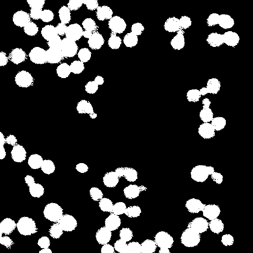
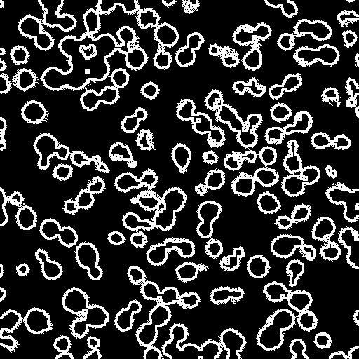
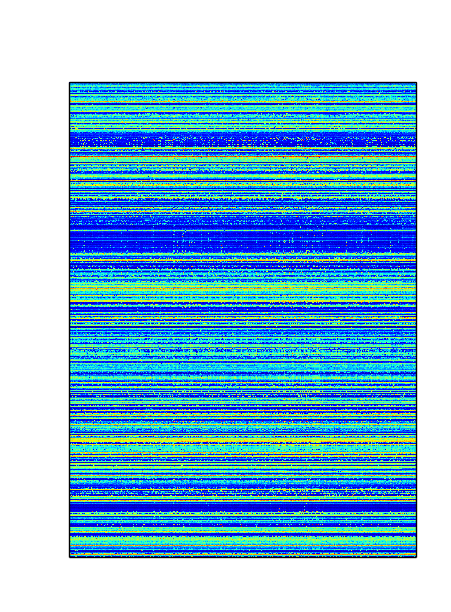
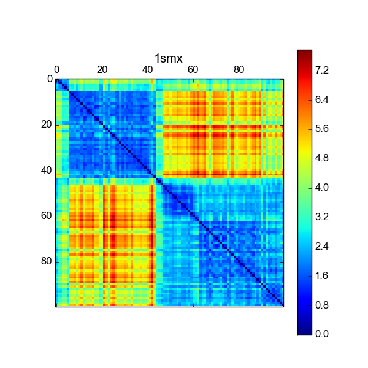

<!DOCTYPE html PUBLIC "-//W3C//DTD XHTML 1.0 Transitional//EN" "http://www.w3.org/TR/xhtml1/DTD/xhtml1-transitional.dtd">
<html xmlns="http://www.w3.org/1999/xhtml">
<head>
<meta http-equiv="content-type" content="text/html; charset=utf-8" />
<title>MSCBIO 2025: Assignments</title>
<link href="default.css" rel="stylesheet" type="text/css" />

</head>

<body>
<!-- <div class="main">
  
  
  <h1>Assignments</h1> -->

<!--

<h2>Final Project (Due 12/6 at 11:59pm)</h2>
<h3>The end is near</h3>

<table width="900pt">
<tr><th>userid</th><th>name</th><th style="text-align: left;">title</th></tr>
<tr><td>shp77</td><td>Shaun</td><td style="text-align: left;"><a href="https://drive.google.com/drive/folders/1YW8Nx_VaRSTOEVAJRdTjvcXeXjVF-PgK?usp=sharing">Visualizing Cancer Drug Treatments using NCI-ALMANAC Data</a></td></tr>
<tr><td>ris84</td><td>Rithika</td><td style="text-align: left;"><a href="https://drive.google.com/drive/folders/186RrfeU6gSR5nKRFko4NKmro_ydUp4rv?usp=sharing">Visualisation and clustering of gene expression data</a></td></tr>
<tr><td>sok65</td><td>Sonia</td><td style="text-align: left;"><a href="https://drive.google.com/drive/folders/1Zw2PzNOLroaIWaO6_Vlvi5fNP1Dp1EYG?usp=sharing">Phosphoprotein-based Gene Expression Analysis with Lasso</a></td></tr>
<tr><td>nes95</td><td>Neha</td><td style="text-align: left;"><a href="https://drive.google.com/drive/folders/1QauERq1PvqhG979OfsbHNuLGyWiXmXhk?usp=sharing">Brain Tumor Detection using MRI Images</a></td></tr>
<tr><td>rul49</td><td>Ruxuan (Rosy) </td><td style="text-align: left;"><a href="https://drive.google.com/drive/folders/1HxT-zemAcieziAkuaA_KMSOUpRJYgh56?usp=sharing">Finding the gene expression features for drug treated cancer cells</a></td></tr>
<tr><td>nip69</td><td>Nishant</td><td style="text-align: left;"><a href="https://drive.google.com/drive/folders/18ASN68tOlkPY4-aiwJmezPQZVzlZKj1M?usp=sharing">The Dynamics of Love</a></td></tr>
<tr><td>snm54</td><td>Sneha</td><td style="text-align: left;"><a href="https://drive.google.com/drive/folders/1Fjz-lrQgHjT7pQSWvqaDjXTsciGHyuMb?usp=sharing">Analysis of Apo and Inhibitor COVID Complexes</a></td></tr>
<tr><td>srd84</td><td>Ramya</td><td style="text-align: left;"><a href="https://drive.google.com/drive/folders/1BkwJyDR7lIeJhx-0e46RpBwIf-T0Qybk?usp=sharing">Finding the best parameters for cells to survive in light so that they don’t turn into vampire cells</a></td></tr>
<tr><td>zih12</td><td>Zikri</td><td style="text-align: left;"><a href="https://drive.google.com/drive/folders/1nDRlt5WV7jAC_R3FvFlybndYZ5xS15R5?usp=sharing">Identifying residues that are likely to undergo a conformational change for protein structural studies</a></td></tr>
<tr><td>&nbsp;</td></tr>
<tr><td>trc84</td><td>Trirupa</td><td style="text-align: left;"><a href="https://drive.google.com/drive/folders/10ZYbzY1lL_DJpF6fTikcCaNjg-F5BWew?usp=sharing">Studying chromosomal contributions to autoimmune diseases: GWAS mining</a></td></tr>
<tr><td>jcm161</td><td>Joseph</td><td style="text-align: left;"><a href="https://drive.google.com/drive/folders/1S65aCI3waSXUhpzX81XkI9utGncENnKu?usp=sharing">Not angiogenesis master regulator! Angiogenesis master regu-now!</a></td></tr>
<tr><td>prc44</td><td>Prabal</td><td style="text-align: left;"><a href="https://drive.google.com/drive/folders/1xdiRFjX3Us-QDJxJCb-QsFhKLIvSdOhB?usp=sharing">Finding the differential frames in a developmental trajectory</a></td></tr>
<tr><td>mlt88</td><td>Madeline</td><td style="text-align: left;"><a href="https://drive.google.com/drive/folders/1PUpVCM_Hm5aguPaEilz3I_LXgEdIxkK8">Determining function from sequence: fasta to phylogenetic tree</a></td></tr>
<tr><td>yay69</td><td>Yaxuan</td><td style="text-align: left;"><a href="https://drive.google.com/drive/folders/1yWkaoWhcgkhGvc1z6J8teoGE2tQ0FbE0?usp=sharing">Dive into Dive Into SARS-CoV-2 Delta Variant</a></td></tr>
<tr><td>knl25</td><td>Karina</td><td style="text-align: left;"><a href="https://drive.google.com/drive/folders/1ujksoA8xiU1B5NNjP-HwAbZ7cH5NZbai?usp=sharing">Generating Viral Mutations of Consequence</a></td></tr>
<tr><td>mhp15</td><td>Miranda</td><td style="text-align: left;"><a href="https://drive.google.com/drive/folders/1euhygYvGZasb--6B-_z7K_QQ_ASLr2ns?usp=sharing">Hydrogel Construct Oxygen Concentration for iPSC islet culture</a></td></tr>
<tr><td>amc371</td><td>Amanda</td><td style="text-align: left;"><a href="https://drive.google.com/drive/folders/1RoRGEmqrqaliyeV0UlpQWFgYNVMABqQC?usp=sharing">Comparative Quantification of Myofibroblasts: Individual Pixels vs Floodfill</a></td></tr>
<tr><td>amb506</td><td>Allison</td><td style="text-align: left;"><a href="https://drive.google.com/drive/folders/104mbNwca33cPImnfKDvjCTs0MWH76dbD">A tool to determine the porosity of gels</a></td></tr>
</table>
<p>
For your final project you will create an assignment. Ideally you will come up with something related to your own research that includes real data.  The script resulting from the assignment should be a general purpose tool capable of taking 
different inputs.  You are not required to decompose your assignment into different levels of partial credit (e.g. 70%, 80%, etc.)
but you may find it useful to structure it that way for organizational purposes.
 
You may use any python packages as long as they can be installed with a package manager.
You are required to provide:

<ul> 
<li>A writeup with sufficient detail for a student to understand and implement the assignment.
This should be done in Google Docs as you will submit your assignment as a shareable link. 
<li>The python code to the solution. The solution should require 20-100 lines of code.  You should submit a single script that takes arguments.
<li>At least three example input/outputs including the necessary commandlines to get the output. 
<b>Make sure it is okay to publicly release the data</b> and include any appropriate acknowledgments/citations.
</ul>

Here are some examples from past years: <a href="http://mscbio2025.csb.pitt.edu/projects2017/erh87/">1</a>
<a href="http://mscbio2025.csb.pitt.edu/projects2016/del53/">2</a>
<a href="http://mscbio2025.csb.pitt.edu/projects2015/zena/">3</a>
 <p>
   
<h4>Submission</h4>
You should slack a link (that permits commenting) in <tt>#general</tt> to a Google Drive folder containing your writeup, 
your presentation, your code (as a <tt>.py</tt> script, not a notebook), and any needed input/output files.


<h4>Presentation</h4>
You will present the background, data, and problem addressed by your project in an 8-10 minute presentation.
You should also outline how you will solve the problem, but do not have to discuss your code in detail.
You must describe your input data.  Make your presentation using Google Slides.
<p>
  

<h3>Grading Rubric</h3>

<b>Presentation</b><br>
Is the problem sufficiently motivated?<br>
Are relevant and informative visual aids used (avoid massive walls of text!)?<br>
Is the input and desired output clearly described?<br>
Is there an outline for how the code will work?<br>

<b>Writeup</b><br>
Is sufficient, but not excessive, background information provided?<br>
Is the task clearly described?<br>
Are the steps required to complete the task presented in a logical manner?<br>
Are there at least three examples, complete with commandline?<br>
Are the examples sufficient to demonstrate the task?<br> 

<b>Code</b><br>
Does the code do what it is suppose to?<br>
Are gross inefficiencies avoided?<br>
Are appropriate data structures used?<br>
Are language features appropriately used?<br>

  
-->

<!-- ASSIGN 12 -->

<!--

<h2>Assignment 12 (Due 11/30 at 11:59pm)</h2>
<h3>You are budding young bioimaging experts*</h3>

Here are some pictures of cells courtesy the <a href="https://clark.genetics.utah.edu/">Clark Lab</a>.  These are single channel images where we are assessing the location of
a <a href="https://en.wikipedia.org/wiki/Green_fluorescent_protein">GFP</a> labeled protein.  Your task
is to count the number of cells, create an image mask of where the cells are, and
report what percent of the total pixel intensity is found within these cells in the region of interest.
<p>
<table>
<tr>
<td>

<a href="files/img1.png">img1.png</a>
</td>
<td>
    
    <a href="files/img2.png">img2.png</a>
</td>
</tr>
</table>

<p>
    
<h4>70% Credit</h4>

Your script should take a threshold value and an image.  It should count 
the number of distinct connected regions containing only pixels greater or equal to
the provided threshold.  You compute this by counting floodfills as discussed in class.
It might be useful to output the corresponding masks that show what regions are floodfilled (white)
and not (black) - see below.
<pre class="code">
$ ./assign12.py 40 img1.png 
325

$ ./assign12.py 20 img2.png 
1108

</pre>
<table>
<tr>
<td>

</td>
<td>
    
</td>
</tr>
</table>

<h4>80% Credit</h4>

In addition to printing out the number of "cells" (connected components of pixels
above the given threshold), print out the percentage of the total intensity that
is contained in these regions  (i.e., the sum of pixel values in this mask divided by the total sum of pixel values).

<pre class="code">
$ ./assign12.py 40 img1.png 
325 13.96%

$ ./assign12.py 20 img2.png 
1108 38.24%

</pre>

<h4>90% Credit</h4>

Modify your script to take a low and high threshold. 
Any pixel greater or equal to the high threshold is considered to be 
definitively within a cell. Pixels greater or equal to the low threshold are 
considered part of a cell only if they are connected to pixels that are part of a cell. 
That is, you need to implement a flood fill algorithm that fills in all 4-connected pixels 
that are greater or equal to the low threshold in order to identify an individual cell, 
but you only initiate the flood fill if there is a pixel greater or equal to the high threshold. 
The number of flood fills you run will be equal to the number of disconnected components (i.e., cells)
 and you will output this number along with the total percent of the intensity that falls within these regions.

<pre class="code">
$ ./assign12.py 11 50 img1.png
17 54.60%
$ ./assign12.py 11 50 img2.png
27 41.78%
</pre>
<table>
<tr>
<td>

</td>
<td>
    
</td>
</tr>
</table>

<pre class="code">
$ ./assign12.py 30 50 img1.png
28 25.03%
$ ./assign12.py 30 50 img2.png
45 12.72%
</pre>
<table>
<tr>
<td>

</td>
<td>
    
</td>
</tr>
</table>


<h4>100% Credit</h4>

For this experiment, what we're actually interested in is the localization of the tagged protein to the membrane versus 
the rest of the cell (actually, the vacuole, but we're simplifying that detail).  Have your script
take an additional numerical argument, N, and create a mask of just the outline of the cells where the width of the outline
is N.  Do this by applying a <a href="https://pillow.readthedocs.io/en/stable/reference/ImageFilter.html">MinFilter</a> to the whole-cell mask image N times.  
This will shrink the size of the cells.  You can take the difference between this image and the original mask to isolate the
boundaries of the cells.

Report the percentage of intensity that is localized to the membrane versus the amount in the 
remainder of the cell (these should add up to 100 - we are ignoring pixels outside of cells).

<pre class="code">
$ ./assign12.py 11 20 img1.png 3
32 66.07%
25.50% 74.50%
$ ./assign12.py 11 20 img2.png 3
83 68.93%
37.60% 62.40%
</pre>
<table>
<tr>
<td>

</td>
<td>
    
</td>
</tr>
</table>
<br>
<i style="font-size:70%">*These are pictures of yeast cells. If you don't get the pun, let it ferment for a bit, it's un-beer-ably funny.</i>
<br>

<hr>

  
-->

<!-- ASSIGN 11 -->  
<!--   
<h2>Assignment 11 (Due 11/16 at 11:59pm)</h2>
<h3>Machine learning on (soluble) drugs</h3>
In this assignment you will use <a href='http://scikit-learn.org/stable/'>sklearn</a> to generate regression models
that predict the solubility (logS) of chemical compounds.
Your script will take as arguments a file with training data and a file with compounds to predict.  
<pre class="code">
./assign11.py solubility_train.fp solubility_predict.fp
</pre>

The training data file 
(<a href="files/solubility_train.fp">solubility_train.fp</a>) has the SMILES of the compound in the first column,
the logS value in the second column, and the remaining columns are binary features representing the <a href="http://www.dalkescientific.com/writings/NBN/fingerprints.html">MACCS</a> chemical fingerprint.
We are using MACCS fingerprints since its relatively small number of features (167) result in faster training. Note there is no need to use pybel to process the SMILES string. Here's an example of training data:
<pre class="code">
FC(F)(F)/C(=C/[C@H]1C([C@@H]1C(=O)OCc1c(c(c(c(c1F)F)C)F)F)(C)C)/Cl -7.32 0 0 0 0 0 0 0 0 0 0 0 0 0 0 0 0 0 0 0 0 0 0 1 0 0 0 0 0 0 0 0 0 0 0 0 0 0 0 0 0 0 0 1 0 0 0 0 0 0 0 0 0 0 0 0 0 0 0 0 0 0 0 0 0 0 0 1 0 0 0 0 0 0 0 1 0 1 0 0 0 0 0 0 0 0 0 0 1 0 0 0 0 0 0 0 0 0 0 0 1 0 0 0 1 0 0 1 1 0 1 0 0 1 0 0 0 0 0 0 0 0 0 0 1 0 0 1 0 0 0 0 0 0 0 1 0 0 0 0 0 0 1 0 0 1 0 0 0 0 1 1 0 0 1 1 1 0 1 0 1 1 0 1 1 1 1 0
[nH]1c2c(c(c1)C)cccc2 -2.42 0 0 0 0 0 0 0 0 0 0 0 0 0 0 0 0 0 0 0 0 0 0 0 0 0 0 0 0 0 0 0 0 0 0 0 0 0 0 0 0 0 0 0 0 0 0 0 0 0 0 0 0 0 0 0 0 0 0 0 0 0 0 0 0 0 1 0 0 0 0 0 0 0 0 0 0 0 0 0 0 0 0 0 1 0 0 0 0 0 0 0 0 0 0 0 0 1 0 0 0 0 1 0 0 0 1 0 0 0 0 0 0 0 0 0 0 0 0 0 0 0 1 0 0 0 1 0 0 0 0 0 0 0 0 0 0 0 1 0 0 0 0 0 0 0 0 0 0 0 0 0 1 0 0 0 0 1 0 0 0 1 1 1 1 0 1 0
Clc1c(c(ccc1)Cl)c1c(ccc(c1)Cl)Cl -6.8 0 0 0 0 0 0 0 0 0 0 0 0 0 0 0 0 0 0 0 0 0 0 0 0 0 0 0 0 0 0 0 0 0 0 0 0 0 0 0 0 0 0 0 0 0 0 0 0 0 0 0 0 0 0 0 0 0 0 0 0 0 0 1 0 0 0 0 0 0 0 0 0 0 0 0 0 0 0 0 0 0 0 0 0 0 0 0 1 0 0 0 0 0 0 0 0 0 0 0 0 0 0 0 1 0 0 0 1 0 0 0 0 0 0 0 0 0 0 0 0 0 0 0 0 0 1 0 0 0 0 0 0 0 0 1 0 0 0 0 0 0 0 0 0 1 1 0 0 0 0 1 0 0 0 0 0 0 0 0 0 0 0 1 1 0 1 0
O(C)C=O 0.58 0 0 0 0 0 0 0 0 0 0 0 0 0 0 0 0 0 0 0 0 0 0 0 0 0 0 0 0 0 0 0 0 0 0 0 0 0 0 0 0 0 0 0 0 0 0 0 0 0 0 0 0 0 0 0 0 0 0 0 0 0 0 0 0 0 0 0 0 0 0 0 0 0 0 0 0 0 0 0 0 0 0 0 0 0 0 0 0 0 0 0 0 0 1 0 0 0 0 0 0 0 0 0 0 0 0 0 0 0 0 0 0 0 0 0 0 0 0 0 0 0 0 0 1 0 0 1 0 0 0 0 0 0 0 0 0 0 0 0 0 0 0 0 0 0 0 0 0 0 0 0 0 0 0 1 0 0 1 0 1 1 0 0 0 1 0 0
ICCC(=O)O -0.43 0 0 0 0 0 0 0 0 0 0 0 0 0 0 0 0 0 0 0 0 0 0 0 0 0 0 0 1 0 0 0 0 0 0 0 0 0 0 0 0 0 0 0 0 0 0 0 0 0 0 0 0 0 0 0 0 0 0 0 0 0 0 0 0 0 0 0 0 0 0 0 0 0 0 0 0 0 0 0 0 0 0 0 0 0 0 0 0 0 0 1 0 0 0 0 0 0 0 0 0 0 0 0 0 1 0 0 0 0 0 0 0 0 0 0 0 0 0 1 0 0 0 0 1 0 0 0 0 0 0 0 0 1 0 1 0 0 0 0 1 0 0 0 0 0 0 0 1 0 0 0 0 0 1 1 1 0 1 0 1 0 0 0 0 1 0 0
C(Cc1ccccc1)c1ccccc1 -4.62 0 0 0 0 0 0 0 0 0 0 0 0 0 0 0 0 0 0 0 0 0 0 0 0 0 0 0 0 0 0 0 0 0 0 0 0 0 0 0 0 0 0 0 0 0 0 0 0 0 0 0 0 0 0 0 0 0 0 0 0 0 0 0 0 0 0 0 0 0 0 0 0 0 0 0 0 0 0 0 0 0 0 0 0 0 0 0 0 0 0 0 0 0 0 0 0 0 0 0 0 0 0 0 0 0 0 0 0 0 0 0 0 0 0 0 0 0 0 1 0 0 0 0 0 0 1 0 0 0 0 0 0 0 0 0 0 0 0 0 0 0 0 0 0 0 1 0 1 0 0 0 0 0 0 0 1 0 0 0 0 0 0 1 1 0 1 0
OCc1ccccc1 -0.4 0 0 0 0 0 0 0 0 0 0 0 0 0 0 0 0 0 0 0 0 0 0 0 0 0 0 0 0 0 0 0 0 0 0 0 0 0 0 0 0 0 0 0 0 0 0 0 0 0 0 0 0 0 0 0 0 0 0 0 0 0 0 0 0 0 0 0 0 0 0 0 0 0 0 0 0 0 0 0 0 0 0 1 0 0 0 0 0 0 0 0 0 0 0 0 0 0 0 0 0 0 0 0 0 0 0 0 0 0 1 0 0 0 0 0 0 0 0 0 0 0 0 0 0 0 0 0 0 0 0 0 0 0 0 0 0 0 0 0 1 0 0 0 0 0 0 0 0 0 0 0 0 0 1 0 1 0 1 0 0 0 0 1 1 1 1 0
OC(=O)c1ccc(cc1)C -2.6 0 0 0 0 0 0 0 0 0 0 0 0 0 0 0 0 0 0 0 0 0 0 0 0 0 0 0 0 0 0 0 0 0 0 0 0 0 0 0 0 0 0 0 0 0 0 0 0 0 0 0 0 0 0 0 0 0 0 0 0 0 0 0 0 0 0 0 0 0 0 0 0 0 0 0 0 0 0 0 0 0 0 0 0 0 0 0 0 0 0 0 0 0 0 0 0 0 0 0 0 0 0 0 0 0 0 0 0 0 0 0 0 0 0 0 0 0 0 0 0 0 0 0 1 0 0 0 0 0 0 0 0 0 0 0 0 0 0 0 1 0 0 0 0 0 0 0 0 0 0 0 0 0 0 1 0 0 1 0 1 1 0 1 1 1 1 0
Clc1c(ccc(c1)NC(=O)N(C)C)OC -2.56 0 0 0 0 0 0 0 0 0 0 0 0 0 0 0 0 0 0 0 0 0 0 0 0 0 0 0 0 0 0 0 0 0 0 0 0 0 1 0 0 0 0 0 0 0 0 0 0 0 0 0 0 0 0 0 0 0 0 0 0 0 0 0 0 0 0 0 0 0 0 0 0 0 0 1 0 0 1 0 0 0 0 0 0 0 1 1 1 0 0 0 0 0 1 0 0 0 0 0 0 0 0 0 1 0 0 1 1 0 0 1 0 0 1 0 0 0 1 0 0 0 0 1 0 0 0 1 1 0 0 0 0 0 1 1 1 0 0 0 0 0 1 1 1 1 0 0 0 1 1 1 1 1 0 1 0 1 1 1 1 1 1 1 1 1 1 0
Cc1c(cc(c(c1)C)C)C -4.59 0 0 0 0 0 0 0 0 0 0 0 0 0 0 0 0 0 0 0 0 0 0 0 0 0 0 0 0 0 0 0 0 0 0 0 0 0 0 0 0 0 0 0 0 0 0 0 0 0 0 0 0 0 0 0 0 0 0 0 0 0 0 0 0 0 0 0 0 0 0 0 0 0 0 0 0 0 0 0 0 0 0 0 0 0 0 0 0 0 0 0 0 0 0 0 0 0 0 0 0 0 0 0 0 0 0 0 0 0 0 0 0 0 0 0 0 0 0 0 0 0 0 0 0 0 0 0 0 0 0 0 0 0 0 0 0 0 0 0 0 0 1 0 0 1 0 0 0 0 1 1 0 0 0 0 0 0 0 0 0 1 0 1 1 0 1 0
</pre>

The prediction file, <a href="files/solubility_predict.fp">solubility_predict.fp</a>, is the same other than missing the logS column:
<pre class="code">
Brc1cc(cc(c1)Br)Br 0 0 0 0 0 0 0 0 0 0 0 0 0 0 0 0 0 0 0 0 0 0 0 0 0 0 0 0 0 0 0 0 0 0 0 0 0 0 0 0 0 0 0 0 0 0 1 0 0 0 0 0 0 0 0 0 0 0 0 0 0 0 0 0 0 0 0 0 0 0 0 0 0 0 0 0 0 0 0 0 0 0 0 0 0 0 0 1 0 0 0 0 0 0 0 0 0 0 0 0 0 0 0 0 0 0 0 1 0 0 0 0 0 0 0 0 0 0 0 0 0 0 0 0 0 0 0 0 0 0 0 0 0 0 1 0 0 0 0 0 0 0 0 0 0 0 0 0 0 0 0 0 0 0 0 0 0 0 0 0 0 0 1 1 0 1 0
Brc1cc(ccc1)Cl 0 0 0 0 0 0 0 0 0 0 0 0 0 0 0 0 0 0 0 0 0 0 0 0 0 0 0 0 0 0 0 0 0 0 0 0 0 0 0 0 0 0 0 0 0 0 1 0 0 0 0 0 0 0 0 0 0 0 0 0 0 0 0 0 0 0 0 0 0 0 0 0 0 0 0 0 0 0 0 0 0 0 0 0 0 0 0 1 0 0 0 0 0 0 0 0 0 0 0 0 0 0 0 1 0 0 0 1 0 0 0 0 0 0 0 0 0 0 0 0 0 0 0 0 0 0 0 0 0 0 0 0 0 0 1 0 0 0 0 0 0 0 0 0 0 0 0 0 0 0 0 0 0 0 0 0 0 0 0 0 0 0 1 1 0 1 0
Brc1c(cc(c(c1)Cl)OP(=S)(OC)OC)Cl 0 0 0 0 0 0 0 0 0 0 0 0 0 0 0 0 0 0 0 0 0 0 0 0 0 0 0 0 0 1 0 0 0 0 0 0 0 0 0 0 0 0 0 0 0 0 1 0 1 0 0 0 0 0 0 0 0 0 0 0 0 0 0 0 0 0 0 1 0 0 0 0 0 1 0 0 0 0 0 0 0 1 0 0 0 0 0 1 1 0 0 0 0 1 0 0 0 0 0 0 0 0 1 1 0 0 1 1 0 0 0 0 1 1 0 0 0 0 0 0 0 0 0 0 1 0 1 1 0 0 1 0 0 0 1 0 0 0 0 0 0 0 0 1 1 0 1 0 1 1 1 0 1 0 0 0 0 1 0 1 1 0 1 1 1 1 0
Brc1c(cnn(c1=O)c1ccccc1)N 0 0 0 0 0 0 0 0 0 0 0 0 0 0 0 0 0 0 0 0 0 0 0 0 0 0 0 0 0 0 0 0 0 0 0 0 0 0 0 0 0 0 0 0 0 0 1 0 0 0 0 0 1 0 0 0 0 0 0 0 0 0 1 0 0 1 0 0 0 0 0 0 0 0 0 1 0 0 0 1 1 0 0 0 1 0 0 1 0 0 0 0 1 0 1 1 0 1 1 0 0 0 0 0 0 0 0 1 0 0 1 0 0 1 0 0 0 1 0 0 1 1 1 0 1 1 0 1 0 0 0 0 0 1 1 1 0 1 0 0 0 0 1 1 1 1 0 0 1 0 1 1 0 0 1 0 1 0 1 0 0 1 1 1 1 1 0
BrCCCC 0 0 0 0 0 0 0 0 0 0 0 0 0 0 0 0 0 0 0 0 0 0 0 0 0 0 0 0 0 0 0 0 0 0 0 0 0 0 0 0 0 0 0 0 0 0 1 0 0 0 0 0 0 0 0 0 0 0 0 0 0 0 0 0 0 0 0 0 0 0 0 0 0 0 0 0 0 0 0 0 0 0 0 0 0 0 0 0 0 0 0 0 0 0 0 0 0 0 0 0 0 0 0 0 0 0 0 0 0 0 0 0 0 0 1 1 1 0 1 0 0 0 0 0 0 0 0 0 0 0 0 0 0 0 1 0 0 0 0 0 0 0 0 0 0 0 0 1 0 0 0 0 0 1 0 1 0 0 0 0 1 0 0 0 0 0 0
BrCC(C)C 0 0 0 0 0 0 0 0 0 0 0 0 0 0 0 0 0 0 0 0 0 0 0 0 0 0 0 0 0 0 0 0 0 0 0 0 0 0 0 0 0 0 0 0 0 0 1 0 0 0 0 0 0 0 0 0 0 0 0 0 0 0 0 0 0 0 0 0 0 0 0 0 0 0 1 0 0 0 0 0 0 0 0 0 0 0 0 0 0 0 0 0 0 0 0 0 0 0 0 0 0 0 0 0 0 0 0 0 0 0 0 0 0 0 0 1 0 0 0 0 0 0 0 0 0 0 0 0 0 0 0 0 0 0 1 0 0 0 0 0 0 0 0 0 0 0 0 0 0 1 0 0 0 1 0 1 0 0 0 0 1 0 0 0 0 0 0
Br[C@@H](Cl)C(F)(F)F 0 0 0 0 0 0 0 0 0 0 0 0 0 0 0 0 0 0 0 0 0 0 0 0 0 0 0 0 0 0 0 0 0 0 0 0 0 0 0 0 0 0 1 0 0 0 1 0 0 0 0 0 0 0 0 0 0 0 0 0 0 0 0 0 0 0 0 0 0 0 0 0 0 0 0 0 0 0 0 0 0 0 0 0 0 0 0 0 0 0 0 0 0 0 0 0 0 0 0 0 0 0 0 1 0 0 1 1 0 0 0 0 1 0 0 0 0 0 0 0 0 0 0 0 0 0 0 0 0 0 0 0 0 0 1 0 0 0 0 0 0 0 0 0 0 0 0 0 0 0 0 0 0 0 0 0 0 0 0 0 0 0 0 0 0 0 0
c12c3c(cc4c1c(ccc2)c1c4cccc1)cccc3 0 0 0 0 0 0 0 0 0 0 0 0 0 0 0 0 0 0 0 0 0 0 0 0 0 0 0 0 0 0 0 0 0 0 0 0 0 0 0 0 0 0 0 0 0 0 0 0 0 0 0 0 0 0 0 0 0 0 0 0 0 0 0 0 0 0 0 0 0 0 0 0 0 0 0 0 0 0 0 0 0 0 0 0 0 0 0 0 0 0 0 0 0 0 0 0 1 0 0 0 0 1 0 0 0 1 0 0 0 0 0 0 0 0 0 0 0 0 0 0 0 0 0 0 0 1 0 0 0 0 0 0 0 0 0 0 0 0 0 0 0 0 0 0 1 1 0 0 0 0 0 0 0 0 0 0 0 0 0 0 0 0 1 1 0 1 0
c12c3c(ccc1cc1c4c(ccc1c2)cccc4)cccc3 0 0 0 0 0 0 0 0 0 0 0 0 0 0 0 0 0 0 0 0 0 0 0 0 0 0 0 0 0 0 0 0 0 0 0 0 0 0 0 0 0 0 0 0 0 0 0 0 0 0 0 0 0 0 0 0 0 0 0 0 0 0 0 0 0 0 0 0 0 0 0 0 0 0 0 0 0 0 0 0 0 0 0 0 0 0 0 0 0 0 0 0 0 0 0 0 0 0 0 0 0 1 0 0 0 1 0 0 0 0 0 0 0 0 0 0 0 0 0 0 0 0 0 0 0 1 0 0 0 0 0 0 0 0 0 0 0 0 0 0 0 0 0 0 0 1 0 0 0 0 0 0 0 0 0 0 0 0 0 0 0 0 1 1 0 1 0
C1=Cc2c3c(cccc13)ccc2 0 0 0 0 0 0 0 0 0 0 0 0 0 0 0 0 0 0 0 0 0 0 0 0 0 0 0 0 0 0 0 0 0 0 0 0 0 0 0 0 0 0 0 0 0 0 0 0 0 0 0 0 0 0 0 0 0 0 0 0 0 0 0 0 0 0 0 0 0 0 0 0 0 0 0 0 0 0 0 0 0 0 0 0 0 0 0 0 0 0 0 0 0 0 0 0 1 0 0 1 0 1 0 0 0 1 0 0 0 0 0 0 0 0 0 0 0 0 0 0 0 0 0 0 0 1 0 0 0 0 0 0 0 0 0 0 0 0 0 0 0 0 0 0 0 1 0 0 0 0 0 0 0 0 0 0 0 0 0 0 0 0 1 1 0 1 0
</pre>

You need to train a model to predict logS on the training data and use it to output predicted values for the prediction file.  Your output should consist of the SMILES and the predicted value for each compound.
<pre class="code">
$ ./assign11.py solubility_train.fp solubility_predict.fp  
Brc1cc(cc(c1)Br)Br -3.50980513515
Brc1cc(ccc1)Cl -3.56635956518
Brc1c(cc(c(c1)Cl)OP(=S)(OC)OC)Cl -5.55909412852
Brc1c(cnn(c1=O)c1ccccc1)N -2.82328203372
BrCCCC -2.45741101157
BrCC(C)C -2.31286356535
Br[C@@H](Cl)C(F)(F)F -3.39613803644
c12c3c(cc4c1c(ccc2)c1c4cccc1)cccc3 -6.77955907399
c12c3c(ccc1cc1c4c(ccc1c2)cccc4)cccc3 -6.83962019315
C1=Cc2c3c(cccc13)ccc2 -7.19764579959
</pre>

You should evaluate several different kinds of machine learning models and optimize their parameters as discussed in <a href="http://mscbio2025.csb.pitt.edu/notes/machinelearning.slides.html#/35">lecture</a>.
Read the sklearn documentation to figure out what parameter values you should evaluate.
Your solution will be evaluated in terms of mean squared error with the true values of the prediction test set.
Since you will not be provided these true values (the point is to predict them afterall), you will optimize your models
to minimize the cross-validation MSE.  This is closely correlated with the MSE of the test set.  This is shown in the below figure where
the average cross-validation MSE is plotted against the test set MSE for a variety of differently trained models.


You should only submit code to train your best model. <b>Do not submit code that does cross-validation or a grid search.</b>
<p></p>
The performance of your model will determine your score.  For reference, my solution has a CV MSE of 0.876 and a test set MSE of 0.769.

<center>
<table>
    <thead>
<th>MSE</th><th>Score</th>
</thead>
<tr><td>&lt;0.80</td><td>100</td></tr>
<tr><td>&lt;0.85</td><td>95</td></tr>
<tr><td>&lt;0.90</td><td>90</td></tr>
<tr><td>&lt;1.0</td><td>80</td></tr>
<tr><td>&lt;1.1</td><td>70</td></tr>
<tr><td>&lt;1.2</td><td>60</td></tr>
<tr><td>&lt;2.0</td><td>50</td></tr>
</table>
</center>
<hr>    
   -->

<!-- Assignment 10 -->
<!-- 
<h2>Assignment 10 (Due 11/9 at 11:59pm)</h2>
<h3>Just say no to dissimilar drugs</h3>

In this assignment you will use  <a href='https://open-babel.readthedocs.io/en/latest/UseTheLibrary/Python_PybelAPI.html'>Pybel</a> 
to perform a similarity search virtual screen. Your script will take two SMILES files as arguments.  The first file will
contain the query molecule(s) and the second file will contain the molecules to search.
Example files can be found <a href="files/smi">here</a>.

<h4>60% Credit</h4>
Print out the molecules in the search file (the second file argument) that obey 
<a href='http://mscbio2025.csb.pitt.edu/notes/cheminformatics.slides.html#/22'>Lipinski's rules</a> 
(for this step you will ignore the first file).  Molecules should be printed as canonical SMILES ('can' format).

<pre class="code">
$ ./assign10.py imatinib.smi kinase.smi
CN1CCN(CC1)Cc1ccc(cc1)C(=O)Nc1ccc(c(c1)Nc1nccc(n1)c1cccnc1)C	Imatinib
CCN(CCNC(=O)c1c(C)[nH]c(c1C)/C=C/1\C(=O)Nc2c1cc(F)cc2)CC	Sunitinib
</pre>


<h4>70% Credit</h4>

Print out each molecule in the search file that matches Lipinski's rules with its
 Tanimoto distance to the first molecule in the query file as determined using
 Pybel's default fingerprints.

The output should display the full SMILES and the Tanimoto coefficient:

<pre class="code">
$ ./assign10.py imatinib.smi kinase.smi 
CN1CCN(CC1)Cc1ccc(cc1)C(=O)Nc1ccc(c(c1)Nc1nccc(n1)c1cccnc1)C	Imatinib 1.0000
CCN(CCNC(=O)c1c(C)[nH]c(c1C)/C=C/1\C(=O)Nc2c1cc(F)cc2)CC	Sunitinib 0.3390
</pre>


<h4>80% Credit</h4>

Sort the search molecules by their Tanimoto similarity and print out the
top 10 molecules (that match Lipinski) in order of decreasing similarity.

<pre class="code">
$ ./assign10.py imatinib.smi 1k.smi 
O=C(NC(C)(C)C)CN(C(=O)c1cc(nc2c1cccc2)c1ccc(cc1)C)C	ZINC10293777 0.4337
CCc1ccc(cc1)C(=O)N1CC[NH+](CC1)[C@H](C(=O)Nc1ccc(cc1)C(=O)C)C	ZINC27743523 0.4194
O=C([C@@H]1COc2c(O1)cccc2)N1CCN(CC1)c1nc(nc2c1cccc2)c1cccnc1	ZINC13096382 0.4038
CCNC(=O)CN(c1nc(C)cc(c1C#N)C)CC	ZINC42370730 0.3943
O=C(c1ccc(cc1)CN1CC(=O)N2[C@H](C1=O)CCC2)Nc1ccccc1Cl	ZINC21526936 0.3895
Clc1ccc(cc1)C[NH+]1CCN(CC1)C(=O)CNC(=O)c1ccc(cc1)N1CCCC1=O	ZINC18017580 0.3865
C[C@@H]1OCCN(C1)Cc1ccc(cc1)C(=O)Nc1cccc2c1[nH]nc2	ZINC25090321 0.3842
CNC(=O)c1ccc(cc1)C[NH+](Cc1ccc(cc1)C(=O)Nc1ccccc1)C	ZINC07996780 0.3813
O=C(c1cccc(c1)CN1C(=O)CNC1=O)Nc1ccc(c(c1)C)n1cnnn1	ZINC29524869 0.3802
Fc1ccc(cc1)Nc1ncccc1C(=O)N(CC1OCCO1)C	ZINC39230173 0.3777
</pre>

<h4>90% Credit</h4>

Compute the <em>average</em> similarity between <em>all</em> the molecules in the query file
and the molecules in the search file. Print the top ten Lipinski matching molecules.
Note that the query molecules should not be filtered by Lipinski's rules.
<pre class="code">
$ ./assign10.py kinase.smi 1k.smi 
Cc1cccc(n1)n1cnc(c1)C(=O)N1CCN(CC1)c1cccc(c1)C(F)(F)F	ZINC01383835 0.3744
O=C(c1cc(nc2c1cccc2)C(C)C)NCc1ccc(nc1)n1cccn1	ZINC39548744 0.3418
O=C([C@@H]1COc2c(O1)cccc2)N1CCN(CC1)c1nc(nc2c1cccc2)c1cccnc1	ZINC13096382 0.3412
COC(=O)c1ccc(cc1)NC(=O)c1cn(C)c2c(c1=O)cc(cc2)Cl	ZINC41056662 0.3394
O=C(c1cccc(c1)CN1C(=O)CNC1=O)Nc1ccc(c(c1)C)n1cnnn1	ZINC29524869 0.3375
CCOC(=O)Cc1ncccc1C(=O)Nc1ccc(cc1)I	ZINC29108003 0.3355
O=C1CCc2c(N1)ccc(c2)[C@@H](NC(=O)C(=O)Nc1cccc(c1)C(=O)N(C)C)C	ZINC41926777 0.3343
O=C(NC(C)(C)C)CN(C(=O)c1cc(nc2c1cccc2)c1ccc(cc1)C)C	ZINC10293777 0.3340
CCc1ccc(cc1)C(=O)N1CC[NH+](CC1)[C@H](C(=O)Nc1ccc(cc1)C(=O)C)C	ZINC27743523 0.3268
CCNC(=O)CN(c1nc(C)cc(c1C#N)C)CC	ZINC42370730 0.3254
</pre>

<h4>100% Credit</h4>

Have your script take similarity threshold as a third argument.
Filter out any molecules where the <em>minimum</em> similarity to any query 
molecule is less than this threshold.
Print the top ten Lipinski matching molecules, sorted by average similarity, after appying
this filter.  Along with the molecule, print the minimum, average, and maximum similarity 
to the query molecules.


<pre class="code">
$ ./assign10.py kinase.smi 1k.smi 0.25
Cc1cccc(n1)n1cnc(c1)C(=O)N1CCN(CC1)c1cccc(c1)C(F)(F)F	ZINC01383835 0.2832 0.3744 0.4489
COC(=O)c1ccc(cc1)NC(=O)c1cn(C)c2c(c1=O)cc(cc2)Cl	ZINC41056662 0.3040 0.3394 0.3763
O=C1CCc2c(N1)ccc(c2)[C@@H](NC(=O)C(=O)Nc1cccc(c1)C(=O)N(C)C)C	ZINC41926777 0.2587 0.3343 0.3743
O=C(NC(C)(C)C)CN(C(=O)c1cc(nc2c1cccc2)c1ccc(cc1)C)C	ZINC10293777 0.2717 0.3340 0.4337
CCNC(=O)CN(c1nc(C)cc(c1C#N)C)CC	ZINC42370730 0.2909 0.3254 0.3943
C[C@@H]1O[C@H](C)CN(C1)c1ccc(cn1)C(=O)NC[C@H]([NH+]1CCCCCC1)C	ZINC32349087 0.2634 0.3253 0.3770
Fc1ccc(cc1)Nc1ncccc1C(=O)N(CC1OCCO1)C	ZINC39230173 0.2562 0.3229 0.3777
C[C@@H]1OCCN(C1)Cc1ccc(cc1)C(=O)Nc1cccc2c1[nH]nc2	ZINC25090321 0.2667 0.3205 0.3842
O=C(c1ccc(cc1)CN1CC(=O)N2[C@H](C1=O)CCC2)Nc1ccccc1Cl	ZINC21526936 0.2842 0.3190 0.3895
COc1ccccc1Nc1ncccc1C(=O)OCC(=O)c1ccc(cc1F)F	ZINC22432499 0.2996 0.3186 0.3319
</pre>


<hr>   -->
<!-- Assignment 9 -->
<!--  
<h2>Assignment 9 (Due 11/2 at 11:59pm)</h2>
<h3>What a wonderful worldwide web</h3>

For this assignment you will be using the <tt>requests</tt> module of python to fetch 
data from the web.  We will use the <a href="https://data.rcsb.org/#data-api">RCSB PDB Data API</a>.
The assumption is you will use the REST-based API, which let's you retrieve the full dump of information on PDB 
entries and entities, but you are welcome to use the more flexible GraphQL-based API if you'd like.

<p>
<h4>50% Credit</h4>

Given a PDB id on the commandline, get the entry information for that PDB using the <a href="https://data.rcsb.org/redoc/index.html#tag/Entry-Service">Entry Service</a> and print out the <tt>nonpolymer_entity_ids</tt> as
a space separated list (this field is found within <tt>rcsb_entry_container_identifiers</tt>).  Use <tt>str.join</tt> to create the space separated list.
<pre class="code">
$ ./assign9.py 2btf
3 4
</pre>
<p></p>
<p>
<h4>60% Credit</h4>
Print the JSON exactly as it is returned from the <a href="https://data.rcsb.org/redoc/index.html#tag/Entity-Service">Entity Service</a> for each <tt>nonpolymer_entity</tt>.
<pre class="code">
$ ./assign9.py 2btf
{"pdbx_entity_nonpoly":{"comp_id":"SR","entity_id":"3","name":"STRONTIUM ION"},"rcsb_nonpolymer_entity":{"formula_weight":0.088,"pdbx_description":"STRONTIUM ION","pdbx_number_of_molecules":1},"rcsb_nonpolymer_entity_container_identifiers":{"asym_ids":["C"],"auth_asym_ids":["A"],"chem_ref_def_id":"SR","entity_id":"3","entry_id":"2BTF","nonpolymer_comp_id":"SR","rcsb_id":"2BTF_3"},"rcsb_nonpolymer_entity_feature_summary":[{"count":0,"type":"SUBJECT_OF_INVESTIGATION"}],"rcsb_id":"2BTF_3","rcsb_latest_revision":{"major_revision":1,"minor_revision":3}}
{"pdbx_entity_nonpoly":{"comp_id":"ATP","entity_id":"4","name":"ADENOSINE-5'-TRIPHOSPHATE"},"rcsb_nonpolymer_entity":{"formula_weight":0.507,"pdbx_description":"ADENOSINE-5'-TRIPHOSPHATE","pdbx_number_of_molecules":1},"rcsb_nonpolymer_entity_container_identifiers":{"asym_ids":["D"],"auth_asym_ids":["A"],"chem_ref_def_id":"ATP","entity_id":"4","entry_id":"2BTF","nonpolymer_comp_id":"ATP","rcsb_id":"2BTF_4"},"rcsb_nonpolymer_entity_feature_summary":[{"count":0,"type":"SUBJECT_OF_INVESTIGATION"}],"rcsb_id":"2BTF_4","rcsb_latest_revision":{"major_revision":1,"minor_revision":3}}
</pre>
<p></p>
<h4>70% Credit</h4>

Extract and print out only the <tt>comp_id</tt> of every present ligand in sorted order.
<pre class="code">
./assign9.py 2btf
ATP
SR
</pre>
<p></p>
<h4>80% Credit</h4>
Print out both the compound id and chemical name of all the ligands in the structure sorted by the <tt>comp_id</tt>.
<pre class="code">
$ ./assign9.py 2btf 
ATP ADENOSINE-5'-TRIPHOSPHATE
SR STRONTIUM ION
</pre>
<p></p>
<h4>90% Credit</h4>

Some ligands have external annotations that provide information about the binding affinity of the ligand.
This is available in the <tt>rcsb_binding_affinity</tt> field of the entry, if it is available.
After printing the compounds ids with their names, print the available binding affinity annotation in the same order as returned by the PDB.

<pre class="code">
$ ./assign9.py 3erk 90
SB4 4-(4-FLUOROPHENYL)-1-(4-PIPERIDINYL)-5-(2-AMINO-4-PYRIMIDINYL)-IMIDAZOLE
SB4 18000.0 nM Binding MOAD
SB4 18000.0 nM BindingDB
SB4 19000.0 nM BindingDB
SB4 18000.0 nM PDBBind
</pre>

<p></p>
<h4>100% Credit</h4>
Print the binding affinity information for a ligand immediately after its sorted id/name with a single space indentation.
Format that affinity value using the <a href="https://docs.python.org/3/library/string.html#format-specification-mini-language">general format presentation type</a>.  
If there are multiple affinity values they should be sorted first by the
affinity value (without correcting for different units) and then by the measurement type.
Note that all ligands should still be printed out, even if they don't have binding affinity information.

<pre class="code">
$ ./assign9.py 2fv5
541 (2R)-N-HYDROXY-2-[(3S)-3-METHYL-3-{4-[(2-METHYLQUINOLIN-4-YL)METHOXY]PHENYL}-2-OXOPYRROLIDIN-1-YL]PROPANAMIDE
 Kd: 0.002 nM PDBBind
 Ki: 0.033 nM Binding MOAD
 Ki: 0.06 nM BindingDB
 IC50: 0.56 nM BindingDB
 Ki: 0.56 nM BindingDB
 IC50: 1 nM BindingDB
 IC50: 1 nM BindingDB
 IC50: 350 nM BindingDB
ZN ZINC ION
</pre>
<hr> -->

<!-- Assignment 8 -->
<!-- <h2 id="assign8">Assignment 8 (Due 10/26 at 11:59pm)</h2>
<h3>Expressive cell lines</h3>
For this assignment we will cluster mRNA expression data from the <a href="http://www.broadinstitute.org/ccle/home">Cancer Cell Line Encyclopedia</a>.
The full dataset is too big, so we'll be working with
some subsets: 
<tt><a href="files/lymphoma.res">lymphoma.res</a></tt> (lymphoma-related genes and cell lines),
<tt><a href="files/oncogene.res">oncogene.res</a></tt> (oncogenes and all cell lines), and
<tt><a href="files/small.res">small.res</a></tt> (first and last 100 genes and all cell lines).

<p>
The data is stored in the <tt><a href="http://www.broadinstitute.org/cancer/software/genepattern/file-formats-guide#RES">res</a></tt> format.
This is a tab-deliminated file where the first three lines contain header information.
Be sure to split your input on tabs, not arbitrary whitespace, otherwise multiple tabs will get coallesced into a single column.
Each data line of the file looks like this:
<pre>
BCL2A1	597_at	3.989013	P	3.908059	P	...
</pre>
The first column is the gene and the second the accession.  Note that sometimes the accession is blank, which
is why it is important to split on explicit tab characters. Also, this means the header is separated by two tab characters.
The data itself alternates between the numerical normalized expression value and a absent/present call character.  

<h4>60% Credit</h4>
<p></p>
Given a res file with N genes and M cell lines, you should extract the numerical expression data from the file into an NxM numpy array (i.e., ignore the absent/present character).
Print this numpy array out after setting these options:
<pre class="code">np.set_printoptions(threshold=np.inf,precision=2)
</pre>

<pre class="code">$ ./assign8.py lymphoma.res 
[[ 9.17  9.37  9.76  7.59  9.47  8.23 10.99  9.83  9.1   8.85  9.04  9.75
   8.65  9.09  8.57  8.78  9.08  8.13  9.99  9.43  9.69  8.85  9.09  9.68
   8.52  9.83  8.45  9.49  8.24  8.32  8.04  9.48  8.51  8.09 10.54  8.58
   9.37  8.86  8.99  8.36  8.7   7.82  9.2   8.75  7.87  9.51  7.82  8.3
   9.2   9.07  8.97  9.24  8.54  8.61  9.25  7.91 10.3   7.42  9.05  9.36
   9.19  9.16  8.58  9.92  8.18  8.1   9.8   8.64 10.65  9.5   8.53  7.95
   9.79  8.57  9.15  9.69  9.3   8.54  8.6   8.77 11.14 10.45  9.14  8.09
  10.01 10.21  9.79 10.    7.51  9.62  9.17  7.97  8.57  8.54 10.    8.11
   8.25  9.67  9.18  9.43  8.99  9.62  9.57  9.75  9.38 10.39  8.79  8.59
   8.48  8.51  8.18  9.07  9.44  9.11  9.58  8.52  8.98 11.15  9.7   9.88

...
</pre>
<p></p>
<h4>70% Credit</h4>
Cluster the rows of this matrix using <tt><a href="http://docs.scipy.org/doc/scipy/reference/cluster.hierarchy.html">scipy.cluster.hierarchy</a></tt>
with the <b>average</b> linkage method.  Print out the Z-linkage matrix.
<pre class="code">$ ./assign8.py lymphoma.res 
[[ 40.    43.     0.     2.  ]
 [ 46.    50.     4.03   2.  ]
 [ 18.    72.     5.08   3.  ]
 [  1.     4.     5.11   2.  ]
 [  9.    74.     6.08   3.  ]
 [ 39.    73.     6.1    4.  ]
 [ 52.    56.     6.42   2.  ]
 [ 33.    41.     6.62   2.  ]
 [ 76.    77.     6.75   6.  ]
 [ 42.    49.     7.43   2.  ]
...
</pre>
<p></p>
<h4>80% Credit</h4>
Reorder the rows of this matrix according to the leaf order of the clustering and print out the reordered matrix.

 For example:
</p>
<pre class="code">$ ./assign8.py lymphoma.res 
[[12.64 13.84 13.54 12.99 12.58 11.04 11.9  12.71 13.19 12.79 12.5  11.96
  13.36 12.06 13.16 13.39 12.56 13.01 13.41 12.2  10.33 10.63 13.06 10.65
  12.93 11.98 12.44 12.67 13.16 13.45 11.8  12.75 13.67 13.61 14.02 14.08
  11.93 13.18 13.75 12.87 12.35 13.51 13.37 12.43  6.86 13.96 13.24 12.06
  12.43 12.66 12.45 11.27 12.08 13.12 12.88 11.01 11.83 10.93 11.68 13.09
  12.36 13.27  4.38 10.06 12.36 12.9  10.07 12.77 13.21 12.48 12.54 11.74
  13.82 11.94 10.94 11.25 12.69 12.17 12.61 12.43 13.82 13.99 13.71 13.02
  12.37 12.96 13.18 13.92 11.29 13.37 13.51 12.08 10.93 11.01 13.01 12.55
  13.25 13.69 13.22 12.43 12.74 11.76 12.12 12.88 13.22 13.28 12.94 12.54
  13.97 12.83 12.88 12.89 11.49 13.05 12.29  9.62 13.52 13.2  12.26 12.74
...
</pre>

<center>
<table>
<tr><td></td>
<td></td></tr>
<tr><td>Before clustering</td><td>After clustering</td></tr>
<tr><td colspan=2><tt>oncogene.res</tt></td></tr>
</table>
</center>

<p></p>
<h4>90% Credit</h4>
In addition to clustering the rows of the data matrix, also cluster the columns
and print the data matrix where both the rows and columns have been reordered
with respect to the leaf order of both clusterings.

<pre class="code">$ ./assign8.py lymphoma.res  
[[11.9  12.89 13.29 13.82 13.92 13.75 13.37 13.22 13.68 13.45 14.02 13.21
  12.2  13.13 13.52 13.22 12.87 13.19 13.02 13.28 13.82 13.22 12.48 13.32
  12.87 12.43 13.82 13.27 12.75 13.96 12.98 12.35 12.71 13.19 12.74 13.84
  13.99 13.05 13.09 12.87 13.1  13.4  12.45 12.77 12.04 12.66 13.54 13.51
  13.01 13.67 13.51 14.04 12.94 12.01 10.93 10.93 13.45 13.37 13.2  14.08
  12.56 13.18 13.96 13.02 13.36 13.61 13.97 12.52 13.71 14.3  12.99 12.88
  13.33 11.93 12.69 10.94 10.6   9.62  9.28 11.01 11.79 11.7  11.04 11.29
  11.01 12.44 12.06 12.43 12.06 12.43 12.86 11.11 12.61 12.08 13.84 13.16
  12.83 11.8  13.59 10.59 10.33 11.96 10.3  10.06 10.07  6.86 13.25  4.38
  12.98 12.47 12.37 11.25 12.37 12.64 11.22 12.88 12.99 13.37 12.17 10.92
...
</pre>

<p></p>
<h4>95% Credit</h4>
Use <tt><a href="https://docs.scipy.org/doc/scipy/reference/generated/scipy.cluster.hierarchy.fcluster.html">fcluster</a></tt> with the <tt>maxclust</tt> criterion to identify <b>20</b>
distinct clusters for both the rows (genes) and columns (cell lines).
Print out the contents of the cluster with id 1 (using the actual names of
the genes/cell lines) for both rows and columns.  Names should be sorted.


<pre class="code">$ ./assign8.py lymphoma.res  
BRD2 MLL5 MTCP1NB MYCBP2 RAP1GDS1 SLMO2 STIL
       BT483_BREAST COLO783_SKIN COV644_OVARY HS281T_BREAST HS616T_HAEMATOPOIETIC_AND_LYMPHOID_TISSUE HUH6_LIVER KASUMI6_HAEMATOPOIETIC_AND_LYMPHOID_TISSUE KMS28BM_HAEMATOPOIETIC_AND_LYMPHOID_TISSUE LN235_CENTRAL_NERVOUS_SYSTEM NALM19_HAEMATOPOIETIC_AND_LYMPHOID_TISSUE SLR21_KIDNEY SNU869_BILIARY_TRACT SNU878_LIVER U343_CENTRAL_NERVOUS_SYSTEM
</pre>


<p></p>
<h4>100% Credit</h4>
Identify the largest cluster of the 20 clusters identified above and print out its size and sorted contents for both genes and cell lines. 
Note that some cell lines have an empty name. <a href="https://docs.scipy.org/doc/numpy/reference/generated/numpy.unique.html"><tt>numpy.unique</tt></a> may be helpful.

<pre class="code">$ ./assign8.py lymphoma.res 
25 BCL2L10 BCL2L14 BCL2L15 BCL2L2 CDX2 LMBRD2 LMO1 MLL4 MLLT4 MLLT4-AS1 MTCP1 MYCBPAP MYCL1 MYCN MYCNOS MYCT1 NKAIN2 OLIG2 RUNX1 RUNX1T1 SLMO1 TAL1 TAL2 TLX1 TLX3
44                 639V_URINARY_TRACT A1207_CENTRAL_NERVOUS_SYSTEM ACCMESO1_PLEURA CL11_LARGE_INTESTINE CL40_LARGE_INTESTINE DKMG_CENTRAL_NERVOUS_SYSTEM HCC2108_LUNG HCC95_LUNG HEC50B_ENDOMETRIUM HS172T_URINARY_TRACT HS739T_BREAST KMRC2_KIDNEY KO52_HAEMATOPOIETIC_AND_LYMPHOID_TISSUE LN428_CENTRAL_NERVOUS_SYSTEM LNZ308_CENTRAL_NERVOUS_SYSTEM LU65_LUNG NCIH1092_LUNG NCIH322_LUNG NCIH82_LUNG NUDUL1_HAEMATOPOIETIC_AND_LYMPHOID_TISSUE OVKATE_OVARY SCC15_UPPER_AERODIGESTIVE_TRACT SNU16_STOMACH SNU626_CENTRAL_NERVOUS_SYSTEM SUPT11_HAEMATOPOIETIC_AND_LYMPHOID_TISSUE SW837_LARGE_INTESTINE SW900_LUNG TF1_HAEMATOPOIETIC_AND_LYMPHOID_TISSUE
</pre>


<p>
Here's what <tt>lymphoma.res</tt> looks like with both genes and cell lines clustered:</p>

<p></p>
Given two linkage matrices, Z1 and Z2, for the rows and columns and the fully 
reordered data matrix, D, here's the code to generate the above picture (in case you are interested,
do not submit code that imports matplotlib). Seaborn <a href="https://seaborn.pydata.org/generated/seaborn.clustermap.html">clustermap</a> would also be helpful for creating a visualization like this.
<pre class="code">
    import matplotlib.pylab as plt
    fig = plt.figure(figsize=(8,8))
    ax1 = fig.add_axes([0.09,0.1,0.2,0.6])
    z1 = hclust.dendrogram(Z1,orientation='left',labels=names[l1])
    ax1.set_xticks([])
    ax1.set_yticks([])

    # Compute and plot second dendrogram.
    ax2 = fig.add_axes([0.3,0.71,0.6,0.15])
    z2 = hclust.dendrogram(Z2,labels=cells[l2])
    ax2.set_xticks([])
    ax2.set_yticks([])


    # Plot distance matrix.
    axmatrix = fig.add_axes([0.3,0.1,0.6,0.6])
    im = axmatrix.matshow(D, aspect='auto', origin='lower')
    
    axmatrix.set_xticks([])
    axmatrix.set_xticks(range(len(cells)))
    axmatrix.set_xticklabels(cells[l2],fontsize=2,rotation='vertical')
    axmatrix.xaxis.set_tick_params(pad=95)
    
    axmatrix.set_yticks(range(len(names)))
    axmatrix.yaxis.tick_right()
    axmatrix.set_yticklabels(names[l1],fontsize=5)

    fig.subplots_adjust(bottom=0.1)
    axcolor = fig.add_axes([0.3,0.07,0.6,0.02])
    fig.colorbar(im,cax=axcolor,orientation='horizontal')
    plt.savefig(sys.argv[3],dpi=600)
</pre>
<hr> -->

<!-- Assignment 7 -->
<!-- <h2>Assignment 7 (Due 10/19 at 11:59pm)</h2>
<h3>These proteins are a changin' - but how?</h3>
For this assignment we will evaluate changes in protein structure across a molecular dynamics simulation.
Your task is to write a script that takes an MD topology file and trajectory file as its arguments,
computes the alpha carbon RMSD between frames, and outputs an analysis.
<p></p>
You can find input data <a href="files/mds">in this directory</a>.
<p>
You should store your calculations in an NxN numpy array (N is the number of frames in the trajectory).
In order to standardize your output, before printing this array, set these print options:
<pre class="code">
np.set_printoptions(threshold=np.inf,precision=2)
</pre>
which will ensure that all elements are printed with a precision of 2 decimal places. 

<h4>60% Credit</h4>

Print out the RMSD from the very first frame of the simulation to all of the frames, like we did in class.
Print your result as a numpy array (the output is exactly that generated from printing
a numpy array - no fancy formatting required other than setting the print options as described above).

<pre class="code">
$ ./assign7.py 1ENH.prmtop 1ENH.dcd
[0.   0.89 0.78 1.11 0.95 0.9  0.93 0.8  1.83 1.24 0.64 0.89 2.27 3.28
 3.72 3.76 2.93 2.03 3.55 3.49 3.33 2.84 3.79 2.23 3.71 3.34 3.71 3.75
 3.58 2.09 3.65 1.61 3.55 3.24 2.22 2.93 2.78 2.84 3.02 1.88 2.46 2.72
 2.54 2.53 2.18 2.3  1.82 1.81 1.89 1.97 2.06 2.   1.94 2.25 2.   2.03
 1.85 1.71 2.19 1.57 1.86 1.93 2.17 2.25 3.36 2.63 3.13 2.96 2.39 2.59
 2.67 3.06 3.11 2.96 3.04 3.23 2.88 2.74 3.14 3.07 3.09 2.61 2.77 3.07
 2.81 2.91 2.89 2.63 2.91 3.18 2.8  2.94 3.02 3.06 3.1  2.97 2.75 3.48
 3.14 2.86]
</pre>

<h4>70% Credit</h4>

Output the full NxN matrix of RMSDs (again, just print the numpy array directly).

<pre class="code">
$  ./assign7.py 1ENH.prmtop 1ENH.dcd
[[0.   0.89 0.78 1.11 0.95 0.9  0.93 0.8  1.83 1.24 0.64 0.89 2.27 3.28
  3.72 3.76 2.93 2.03 3.55 3.49 3.33 2.84 3.79 2.23 3.71 3.34 3.71 3.75
  3.58 2.09 3.65 1.61 3.55 3.24 2.22 2.93 2.78 2.84 3.02 1.88 2.46 2.72
  2.54 2.53 2.18 2.3  1.82 1.81 1.89 1.97 2.06 2.   1.94 2.25 2.   2.03
  1.85 1.71 2.19 1.57 1.86 1.93 2.17 2.25 3.36 2.63 3.13 2.96 2.39 2.59
  2.67 3.06 3.11 2.96 3.04 3.23 2.88 2.74 3.14 3.07 3.09 2.61 2.77 3.07
  2.81 2.91 2.89 2.63 2.91 3.18 2.8  2.94 3.02 3.06 3.1  2.97 2.75 3.48
  3.14 2.86]
 [0.89 0.   0.8  1.21 1.19 1.   1.26 1.25 2.23 1.41 0.86 0.84 2.19 2.99
  3.54 3.53 2.81 1.99 3.32 3.52 3.26 2.82 3.72 2.49 3.89 3.43 3.73 3.8
  3.5  2.06 3.47 1.35 3.37 3.14 2.13 2.85 2.75 2.83 2.95 1.72 2.31 2.65
  2.36 2.47 1.96 2.16 1.49 1.56 1.63 1.64 1.82 1.75 1.66 1.93 1.72 1.75
  1.74 1.5  1.96 1.25 1.57 1.71 2.12 2.36 3.41 2.53 3.04 2.94 2.32 2.41
  2.6  3.12 3.34 3.2  3.28 3.41 3.14 2.87 3.38 3.31 3.32 2.94 3.02 3.32
  3.01 3.11 3.15 2.91 3.15 3.4  3.04 3.13 3.24 3.27 3.33 3.16 2.98 3.71
  3.42 3.11]
<i>...98 more rows...</i>
</pre>

<b>Tip:</b> The calculated matrix is symmetric.  You should be able to use this fact to make your script 2X faster.
<p></p>
You can use matplotlib's <a href="https://matplotlib.org/2.0.2/api/pyplot_api.html#matplotlib.pyplot.matshow">matshow</a> function to visualize this matrix as a heatmap
(this is for your own information, do not submit scripts that generate graphs).

<table>
<tr><td></td>
<td></td></tr>
<tr><td></td>
<td></td></tr>
</table>

<h4>80% Credit</h4>

Have your script take a third argument: a floating point cutoff value.
Calculate the number of frames that are within that cutoff value of the first frame 
and output the result.

<pre class="code">
$ ./assign7.py 1ENH.prmtop 1ENH.dcd 3.3 
Frame 0 is within 3.30 of 85 frames
</pre>

<h4>90% Credit</h4>
Find the frame in the trajectory that is within the provided RMSD cutoff of the most frames in the trajectory.
That is, it is structurally similar to the largest number of frames; it has the most columns in its row with a value
below the cutoff.  Print 
an informative message about this frame.

<pre class="code">
$ ./assign7.py 1ENH.prmtop 1ENH.dcd 2.1 
Frame 62 is within 2.10 of 65 frames
</pre>

<h4>95% Credit</h4>

Find the 10 frames that have the most similar frames according to the cutoff and print them out in descending order.
Frames that match the same number of frames should be sorted in frame order.

<pre class="code">
$ ./assign7.py 1ENH.prmtop 1ENH.dcd 1.5 
Frame 40 is within 1.50 of 32 frames
Frame 42 is within 1.50 of 32 frames
Frame 44 is within 1.50 of 31 frames
Frame 45 is within 1.50 of 30 frames
Frame 34 is within 1.50 of 29 frames
Frame 39 is within 1.50 of 29 frames
Frame 69 is within 1.50 of 29 frames
Frame 72 is within 1.50 of 29 frames
Frame 75 is within 1.50 of 29 frames
Frame 76 is within 1.50 of 29 frames
</pre>


<h4>100% Credit</h4>

Looking at the above output it is clear that many of the output frames are within the RMSD cutoff of each other (they are close).  
If our goal is to identify a few representative conformations of the simulation, this redundancy isn't helpful.  
In order to provide a set of <b>distinct</b> conformations, only output a
frame if that frame and <i>all the frames close to it</i> are not close to an already output frame. Here "close" means within the provided cutoff.
That is, keep track of the set of <i>covered</i> frames.  For example, above frame 40 is within 1.5 of 
frames 42, 44, 45, 35, 39, and 69 (and several others).  These frames are considered covered by frame 40
and so are not output. Frames should be evaluated for non-overlapping coverage in the same order they
are printed out above and all such frames should be printed.

<pre class="code">
$ ./assign7.py 1ENH.prmtop 1ENH.dcd 1.5 
Frame 40 is within 1.50 of 32 frames
Frame 72 is within 1.50 of 29 frames
Frame 1 is within 1.50 of 14 frames
Frame 20 is within 1.50 of 10 frames
Frame 14 is within 1.50 of 4 frames
Frame 23 is within 1.50 of 2 frames
Frame 12 is within 1.50 of 1 frames
Frame 16 is within 1.50 of 1 frames
Frame 17 is within 1.50 of 1 frames
</pre>

<hr> -->

<!-- ASSIGN 6 -->
<!-- 
<h2>Assignment 6 (Due 10/12 at 11:59pm)</h2>
<h3>Fluctuating proteins</h3> 
In this assignment you will use <a href="http://prody.csb.pitt.edu">ProDy</a> to examine the fluctuations inherent in a protein structure as computed
using both GNM and ANM.  Both methods analyze a single protein structure and represent it as an elastic network, where "springs" connect
nearby residues.  <a href="https://en.wikipedia.org/wiki/Gaussian_network_model">GNM</a> uses only connectivity information and the computed motions lack directionality, unlike in
<a href="https://en.wikipedia.org/wiki/Anisotropic_Network_Model">ANM</a>.  Both approaches are methods for predicting the motions, including large motions, of a protein from its structure.


<h4>60% Credit</h4>

Your script should take a PDB identifier as its only argument, download this PDB with ProDy, and calculate
the GNM modes with <a href="http://prody.csb.pitt.edu/manual/reference/dynamics/gnm.html?highlight=calcgnm#prody.dynamics.gnm.calcGNM">calcGNM</a> with all default arguments.
Calculate the <a href="http://prody.csb.pitt.edu/manual/reference/dynamics/analysis.html?highlight=calcsqflucts#prody.dynamics.analysis.calcSqFlucts">squared fluctuations</a> for every (calpha) atom using the full set of modes (the returned GNM object).
Print out the value of the largest fluctuation.
Note you can suppress ProDy's informative messages with <tt>prody.LOGGER._setverbosity('none')</tt>.
</tt>
<pre class="code">
$ ./assign6.py 7fay
Max GNM SqFluct: 0.190
</pre>


<h4>65% Credit</h4>

Calculate the ANM modes with <a href="http://prody.csb.pitt.edu/manual/reference/dynamics/anm.html?highlight=calcanm#prody.dynamics.anm.calcANM">calcANM</a> with all default arguments.
Calculate the <a href="http://prody.csb.pitt.edu/manual/reference/dynamics/analysis.html?highlight=calcsqflucts#prody.dynamics.analysis.calcSqFlucts">squared fluctuations</a> for every (calpha) atom using the full set of modes (the returned ANM object).
Print out the value of the largest fluctuation.
</tt>
<pre class="code">
$ ./assign6.py 7fay
Max GNM SqFluct: 0.190
Max ANM SqFluct: 0.682
</pre>

<h4>70% Credit</h4>
Compute the absolute value of the difference between these two calculations for each atom. 
Print out the largest difference.

<pre class="code">
$ ./assign6.py 7fay
Max GNM SqFluct: 0.190
Max ANM SqFluct: 0.682
Max Abs Difference: 0.492
</pre>

<h4>80% Credit</h4>
As seen below, the differences between the GNM and ANM values is largely due to differences in scale.<br>
<br>
Normalize the GNM and ANM values so that the max value of each is 1.0 (you do not have to scale the minimum value to zero or impose a unit variance).
This should result in values like below.<br>
<br>
Compute the absolute difference between these normalized values and print out the maximum.

<pre class="code">
$ ./assign6.py 7fay
Max GNM SqFluct: 0.190
Max ANM SqFluct: 0.682
Max Abs Difference: 0.492
Max Abs Norm Difference: 0.347
</pre>

<h4>90% Credit</h4>

Create a list of tuples of <tt>(index, absolute difference)</tt> where <tt>index</tt> is the position
in  the differences array. Sort this list by the value of the difference so the largest differences are at
the front of the list. Print out the ten highest values with their index.


<pre class="code">
$ ./assign6.py 7fay
Max GNM SqFluct: 0.190
Max ANM SqFluct: 0.682
Max Abs Difference: 0.492
Max Abs Norm Difference: 0.347
0.347 276
0.345 153
0.321 71
0.247 195
0.244 58
0.225 257
0.209 54
0.202 46
0.196 297
0.166 45
</pre>

Note that these positions are consistent with the above graphs.

<h4>100% Credit</h4>

Instead of indices into the fluctuations array, print the residue name and number associated with each position.
Hint: The indices correspond to atoms in a calpha selection.

<pre class="code">
$  ./assign6.py 7fay
Max GNM SqFluct: 0.190
Max ANM SqFluct: 0.682
Max Abs Difference: 0.492
Max Abs Norm Difference: 0.347
0.347 ASN277
0.345 TYR154
0.321 ASN72
0.247 THR196
0.244 ILE59
0.225 GLY258
0.209 GLU55
0.202 GLU47
0.196 ARG298
0.166 SER46
</pre>

<p align=center>
<br>
<i style="font-size:0.8em">Differences mapped to structure as b-factors and spectrum colored.</i>
</p>
<hr>   -->

<!-- ASSIGN 5 -->
<!-- <h2>Assignment 5 (Due 10/5 at 11:59pm)</h2>
<h3>Reaching a consensus</h3>

In this assignment you will use <a href="http://biopython.org">Biopython</a> to download protein sequences from the NCBI Protein database,
align the sequences, and produce a consensus sequence.  Your script should take a single argument
that will be used as the search term to search the 'protein' NCBI database (e.g. <tt>mdm2[gene]</tt>).  
 Keep in mind when submitting that the queries and alignments take a while so please be patient while waiting for the result.
 Also, it is possible that over the course of the next week sequences will be added to the NCBI database that change the correct answer.

<h4>70% Credit</h4>

Use the default search values (a maximum of 20 sequences will be returned) and request fasta formatted results.  
Write these results directly to a file <tt>searchresults.fasta</tt> (there is no need to parse them with biopython).  To avoid a <tt>Too many requests</tt> error, call <tt>efetch</tt> once with 
the full list of ids rather than fetching a single id at a time.  Note that Entrez is not fully deterministic in what results it returns, so you may need to submit multiple times with a correct solution.

<pre class="code">
$ ./assign5.py 'mdm2[gene]'
$ head searchresults.fasta 
>XP_037742865.1 E3 ubiquitin-protein ligase Mdm2 isoform X2 [Chelonia mydas]
MKEVIFYLGQYIMSKQLYDEKQQHIVHCADDLLGDLFGVPSFSVKEHRKVYSMISRNLIAVSQQESMEAN
VSENETRCQLEKGNVLKESMQELVDEKQTSPNLTARPTTSSRRMLSESEENSSDEQPSERRKRHKSDSIS
LTFDESLSWCVVSGLCCEGSNSSDSIDSASPDLHASSLSENSDWFDQSSVSDQFSVEFEVESIYSEDYSH
NEEGQELTDEDDEVYQVTIYQTEESDADSFDEDPEISLADYWKCTKCNEMNPPLPRHCPRCWALREDWLP
DEKNDDKSEKRKLESSTQLEHEEGFDVPDCKKVKMNEDKELSVEESEDTTAQTSESQESEEYSQPSTSSN
IFCSSQEDCKEPEKKESEDKEESMECSLPLSSIEPCVICQSRPKNGCIVHGKTGHLMSCFTCARKLKKRN
KPCPVCRQPIQMIVLTYFS

>XP_037742859.1 E3 ubiquitin-protein ligase Mdm2 isoform X1 [Chelonia mydas]
</pre>

<h4>80% Credit</h4>
 <p></p>
 Align the returned sequences using clustal (which is installed on <tt>python.mscbio2025.net</tt>; you can install it 
 locally with <tt>sudo apt-get install clustalw</tt>).  
Generate an alignment file <tt>align.aln</tt>.

<pre class="code">
$ ./assign5.py 'mdm2[gene]'
$ head align.aln 
CLUSTAL 2.1 multiple sequence alignment


XP_043349560.1      -------------------------------------------------MKEVIFYLGQY
XP_038234537.1      MCNTKMSAGSEDRLGASSIPYAEQEALVKPKPLLLKLLKFAGAQKDTFTMKEVIFYLGQY
XP_037742865.1      -------------------------------------------------MKEVIFYLGQY
XP_037742859.1      MCNTKMSAGSDDRLGASSIPHAEQEALVKPKPLLLKLLNCAGAQKDTFTMKEVIFYLGQY
XP_037742855.1      MCNTKMSAGSDDRLGASSIPHAEQEALVKPKPLLLKLLNCAGAQKDTFTMKEVIFYLGQY
XP_043420873.1      MCNTNMSVSTDGAVSTSQMPASEQETLVRPKPLLLKLLKSVGAQKDTYTMKEVIFYLGQY
XP_043420870.1      MCNTNMSVSTDGAVSTSQMPASEQETLVRPKPLLLKLLKSVGAQKDTYTMKEVIFYLGQY
</pre>

<h4>90% Credit</h4>
 <p></p>
Compute and print out a simple consensus sequence from this alignment.  The consensus sequence puts the most common residue at each position, including gaps (you will use the 
 <tt>gap_consensus</tt> method of the <a href="http://biopython.org/DIST/docs/tutorial/Tutorial.html#sec:consensus"><Tt>SummaryInfo</Tt></a> object with a threshold of 0).
 <p></p>

<pre class="code">
$ ./assign5.py 'mdm2[gene]'
-----MSTNGXANCLGSSQPDQEQECLVKPKPLLLKLLHFAGAQKDTFTMKEVIFYLGQYIMAKQLYDEKQQHIVHCSDDLLGDLFGVPSFSVKEHRKLYAMISRNLISVGQEESIN-DLSLGEIRCQLEGGDCLKTVIQELDGEKCTSCNLSCRPATSSRRNCSDSDEDAS-DEQPHERRRKRHKSDSISLHFDESLSLCVISKLCCEHSNSSESSDSPSHPDLHAGTEGEDSDW-DQ-SVSDQFSVEFEVESVHSEDYS-FSEEGQELSDEDDEVYEVTIYQAAESDEDSFVE--DPEISLADYWKCTKCNEMNPPLPRHCNRCWALREDWLPD-K--DK----EK-KVENSTQVE-DEGFDVPDCKKTTVNDSKESCAEE--DLITQASQSQESEE--YSQPSTSNSIICSSQEDVKEFERKETQDKEE--E-S-PLXXIEPCVICQXRPKNGCIVHGKTGHLMACFTCAKKLKKRNKPCPVCRQPIQMIVLTYFS
</pre> -->

<!-- Note: break up this last part.  First calculate the number in common for all sequences (90), then do the sort as another part (100). -->
<!-- 
<h4>100% Credit</h4>
In addition to printing out this consensus sequence, print out
the ten aligned sequences that that have the most in common with
the <b>non-gaps</b> of this consensus sequence. That is, they have the largest number of identical residues.
  The description of the sequence and the number of common residues
should be printed out, followed by the gapped sequence from the alignment on the next line. 
In order to match the order of the solution, the sequences should be sorted primarily by the number of common residues (in decreasing order) 
and secondarily by the sequence description (in regular lexographical order - not reversed).

<pre class='code'>
$ ./assign5.py 'mdm2[gene]' 100
-----MSTNGXANCLGSSQPDQEQECLVKPKPLLLKLLHFAGAQKDTFTMKEVIFYLGQYIMAKQLYDEKQQHIVHCSDDLLGDLFGVPSFSVKEHRKLYAMISRNLISVGQEESIN-DLSLGEIRCQLEGGDCLKTVIQELDGEKCTSCNLSCRPATSSRRNCSDSDEDAS-DEQPHERRRKRHKSDSISLHFDESLSLCVISKLCCEHSNSSESSDSPSHPDLHAGTEGEDSDW-DQ-SVSDQFSVEFEVESVHSEDYS-FSEEGQELSDEDDEVYEVTIYQAAESDEDSFVE--DPEISLADYWKCTKCNEMNPPLPRHCNRCWALREDWLPD-K--DK----EK-KVENSTQVE-DEGFDVPDCKKTTVNDSKESCAEE--DLITQASQSQESEE--YSQPSTSNSIICSSQEDVKEFERKETQDKEE--E-S-PLXXIEPCVICQXRPKNGCIVHGKTGHLMACFTCAKKLKKRNKPCPVCRQPIQMIVLTYFS
XP_037742855.1 365
MCNTKMSAGSDDRLGASSIPHAEQEALVKPKPLLLKLLNCAGAQKDTFTMKEVIFYLGQYIMSKQLYDEKQQHIVHCADDLLGDLFGVPSFSVKEHRKVYSMISRNLIAVSQQESMEANVSENETRCQLEKGNVLKESMQELVDEKQTSPNLTARPTTSSRRMLSESEENSS-DEQPSER-RKRHKSDSISLTFDESLSWCVVSGLCCEGSNSSDSIDSAS-PDLHASSLSENSDWFDQSSVSDQFSVEFEVESIYSEDYS-HNEEGQELTDEDDEVYQVTIYQTEESDADSFDE--DPEISLADYWKCTKCNEMNPPLPRHCPRCWALREDWLPDEKNDDK---SEKRKLESSTQLEHEEGFDVPDCKKVKMNEDKELSVEESEDTTAQTSESQESEE--YSQPSTSSNIFCSSQEDCKEPEKKESEDKEESMECSLPLSSIEPCVICQSRPKNGCIVHGKTGHLMSCFTCARKLKKRNKPCPVCRQPIQMIVLTYFS
XP_037742859.1 365
MCNTKMSAGSDDRLGASSIPHAEQEALVKPKPLLLKLLNCAGAQKDTFTMKEVIFYLGQYIMSKQLYDEKQQHIVHCADDLLGDLFGVPSFSVKEHRKVYSMISRNLIAVSQQESMEANVSENETRCQLEKGNVLKESMQELVDEKQTSPNLTARPTTSSRRMLSESEENSS-DEQPSER-RKRHKSDSISLTFDESLSWCVVSGLCCEGSNSSDSIDSAS-PDLHASSLSENSDWFDQSSVSDQFSVEFEVESIYSEDYS-HNEEGQELTDEDDEVYQVTIYQTEESDADSFDE--DPEISLADYWKCTKCNEMNPPLPRHCPRCWALREDWLPDEKNDDK---SEKRKLESSTQLEHEEGFDVPDCKKVKMNEDKELSVEESEDTTAQTSESQESEE--YSQPSTSSNIFCSSQEDCKEPEKKESEDKEESMECSLPLSSIEPCVICQSRPKNGCIVHGKTGHLMSCFTCARKLKKRNKPCPVCRQPIQMIVLTYFS
XP_043420867.1 364
MCNTNMSVSTDGAVSTSQMPASEQETLVRPKPLLLKLLKSVGAQKDTYTMKEVIFYLGQYIMTKRLYDEKQQHIVYCSNDLLGDLFGVPSFSVKEHRKIYTMIYRNLVVVNQHEPSDSGTSVSENRCHLEGGSDQKDPVQELQEEKPSSSDLVSRPSTSSRRRTISETEEHS-DELPGERQRKRHKSDSISLSFDESLALCVIREICCERSSSSESTGTPSNPDLDAGVSEHSGDWLDQDSVSDQFSVEFEVESLDSEDYS-LSEEGQELSDEDDEVYRVTVYQAGESDTDSFEE--DPEISLADYWKCTSCNEMNPPLPPHCNRCWALRENWLPEDKGKDKGKMPEKAKVENSTQVE--EGFDVPDCKKTTVNDSRESCAEENDDKITQASQSQESED--YSQPSTSNSIIHSSQEDVKEFEREETQDKEEIVESSFPHNAIEPCVICQGRPKNGCIVHGKTGHLMACFTCAKKLKKRNKPCPVCRQPIQMIVLTYFP
XP_043420868.1 364
MCNTNMSVSTDGAVSTSQMPASEQETLVRPKPLLLKLLKSVGAQKDTYTMKEVIFYLGQYIMTKRLYDEKQQHIVYCSNDLLGDLFGVPSFSVKEHRKIYTMIYRNLVVVNQHEPSDSGTSVSENRCHLEGGSDQKDPVQELQEEKPSSSDLVSRPSTSSRRRTISETEEHS-DELPGERQRKRHKSDSISLSFDESLALCVIREICCERSSSSESTGTPSNPDLDAGVSEHSGDWLDQDSVSDQFSVEFEVESLDSEDYS-LSEEGQELSDEDDEVYRVTVYQAGESDTDSFEE--DPEISLADYWKCTSCNEMNPPLPPHCNRCWALRENWLPEDKGKDKGKMPEKAKVENSTQVE--EGFDVPDCKKTTVNDSRESCAEENDDKITQASQSQESED--YSQPSTSNSIIHSSQEDVKEFEREETQDKEEIVESSFPHNAIEPCVICQGRPKNGCIVHGKTGHLMACFTCAKKLKKRNKPCPVCRQPIQMIVLTYFP
XP_043420869.1 364
MCNTNMSVSTDGAVSTSQMPASEQETLVRPKPLLLKLLKSVGAQKDTYTMKEVIFYLGQYIMTKRLYDEKQQHIVYCSNDLLGDLFGVPSFSVKEHRKIYTMIYRNLVVVNQHEPSDSGTSVSENRCHLEGGSDQKDPVQELQEEKPSSSDLVSRPSTSSRRRTISETEEHS-DELPGERQRKRHKSDSISLSFDESLALCVIREICCERSSSSESTGTPSNPDLDAGVSEHSGDWLDQDSVSDQFSVEFEVESLDSEDYS-LSEEGQELSDEDDEVYRVTVYQAGESDTDSFEE--DPEISLADYWKCTSCNEMNPPLPPHCNRCWALRENWLPEDKGKDKGKMPEKAKVENSTQVE--EGFDVPDCKKTTVNDSRESCAEENDDKITQASQSQESED--YSQPSTSNSIIHSSQEDVKEFEREETQDKEEIVESSFPHNAIEPCVICQGRPKNGCIVHGKTGHLMACFTCAKKLKKRNKPCPVCRQPIQMIVLTYFP
XP_043420870.1 364
MCNTNMSVSTDGAVSTSQMPASEQETLVRPKPLLLKLLKSVGAQKDTYTMKEVIFYLGQYIMTKRLYDEKQQHIVYCSNDLLGDLFGVPSFSVKEHRKIYTMIYRNLVVVNQHEPSDSGTSVSENRCHLEGGSDQKDPVQELQEEKPSSSDLVSRPSTSSRRRTISETEEHS-DELPGERQRKRHKSDSISLSFDESLALCVIREICCERSSSSESTGTPSNPDLDAGVSEHSGDWLDQDSVSDQFSVEFEVESLDSEDYS-LSEEGQELSDEDDEVYRVTVYQAGESDTDSFEE--DPEISLADYWKCTSCNEMNPPLPPHCNRCWALRENWLPEDKGKDKGKMPEKAKVENSTQVE--EGFDVPDCKKTTVNDSRESCAEENDDKITQASQSQESED--YSQPSTSNSIIHSSQEDVKEFEREETQDKEEIVESSFPHNAIEPCVICQGRPKNGCIVHGKTGHLMACFTCAKKLKKRNKPCPVCRQPIQMIVLTYFP
XP_038234537.1 363
MCNTKMSAGSEDRLGASSIPYAEQEALVKPKPLLLKLLKFAGAQKDTFTMKEVIFYLGQYIMSKQLYDEKQQHIVHCADDLLGDLFGVPSFSVKEHRKVYSMISRNLIAVSEQESMEANASENETRRQLEKGNVLKESMQELVDEKQTSPNLTARPTTSSRRMLSESEENSS-DEQHSER-RKRHKSDSISLTFDESLSWCVVSGLCCEGSNSSDSVDSAS-PDLHASSLSENSDWFDQSSVSDQFSVEFEVESIYSEDYS-HNEEGQELTDEDDEVYQVTIYQTEESDADSFDE--DPEISLADYWKCTKCNEMNPPLPRHCPRCWALREDWLPDEKNDDK---SEKRKLESSTQLEHEEGFDVPDCKKVKMNEDKELSVEESEDTTAQTSESQESEE--YSQPSTSSNIFCSSQEDCKEPEKKESEDKEESMECSLPLSSIEPCVICQSRPKNGCIVHGKTGHLMSCFTCARKLKKRNKPCPVCRQPIQMIVLTYFS
XP_043420871.1 340
MCNTNMSVSTDGAVSTSQMPASEQETLVRPKPLLLKLLKSVGAQKDTYTMKEVIFYLGQYIMTKRLYDEKQQHIVYCSNDLLGDLFGVPSFSVKEHRKIYTMIYRNLVVVNQH-------------------------------------------------------EEHS-DELPGERQRKRHKSDSISLSFDESLALCVIREICCERSSSSESTGTPSNPDLDAGVSEHSGDWLDQDSVSDQFSVEFEVESLDSEDYS-LSEEGQELSDEDDEVYRVTVYQAGESDTDSFEE--DPEISLADYWKCTSCNEMNPPLPPHCNRCWALRENWLPEDKGKDKGKMPEKAKVENSTQVE--EGFDVPDCKKTTVNDSRESCAEENDDKITQASQSQESED--YSQPSTSNSIIHSSQEDVKEFEREETQDKEEIVESSFPHNAIEPCVICQGRPKNGCIVHGKTGHLMACFTCAKKLKKRNKPCPVCRQPIQMIVLTYFP
XP_037742865.1 336
-------------------------------------------------MKEVIFYLGQYIMSKQLYDEKQQHIVHCADDLLGDLFGVPSFSVKEHRKVYSMISRNLIAVSQQESMEANVSENETRCQLEKGNVLKESMQELVDEKQTSPNLTARPTTSSRRMLSESEENSS-DEQPSER-RKRHKSDSISLTFDESLSWCVVSGLCCEGSNSSDSIDSAS-PDLHASSLSENSDWFDQSSVSDQFSVEFEVESIYSEDYS-HNEEGQELTDEDDEVYQVTIYQTEESDADSFDE--DPEISLADYWKCTKCNEMNPPLPRHCPRCWALREDWLPDEKNDDK---SEKRKLESSTQLEHEEGFDVPDCKKVKMNEDKELSVEESEDTTAQTSESQESEE--YSQPSTSSNIFCSSQEDCKEPEKKESEDKEESMECSLPLSSIEPCVICQSRPKNGCIVHGKTGHLMSCFTCARKLKKRNKPCPVCRQPIQMIVLTYFS
XP_043349560.1 333
-------------------------------------------------MKEVIFYLGQYIMSKQLYDEKQQHIVHCADDLLGDLFGVPSFSVKEHRKVYSMISRNLIAVSEQESMEANASENETRRQLEKGNVLKESMQELVDEKQTSPNLTARPTTSSRRMLSESEENSS-DEQHSER-RKRHKSDSISLTFDESLSWCVVSGLCCEGSNSSDSVDSAS-PDLHASSLSENSDWFDQSSVSDQFSVEFEVESIYSEDYS-HNEEGQELTDEDDEVYQVTIYQTEESDADSFDE--DPEISLADYWKCTKCNEMNPPLPRHCPRCWALREDWLPDEKNDDK---SEKRKLESSTQLEHEEGFDVPDCKKVKMNEDKELSVEESEDTTAQTSESQESEE--YSQPSTSSNIFCSSQEDCKEPEKKESEDKEESMECSLPLSSIEPCVICQSRPKNGCIVHGKTGHLMSCFTCARKLKKRNKPCPVCRQPIQMIVLTYFS
</pre>


<p></p>
<hr>   -->
<!-- ASSIGN 4 -->
<!-- 
<h2>Assignment 4 (Due 9/28 at 11:59pm)</h2>
<h3>I see fifty ways to fit data...</h3>

In this assignment you'll write a script to parameterize functions on (x,y) data from a text file using numpy and scipy.
You will create a python script, <tt>assign4.py</tt>, that takes as its sole argument the name of an input file.
The input file has whitespace separated dose-response data (example files are <a href="files/assign4">here</a>):
<pre class="code">
195.3125 332
390.625 337.8125
781.25 322.6675
1562.5 301.625
3125 270.1875
6250 247.0375
12500 188.8
25000 115.4
50000 88.555
100000 93.8066666667
</pre>

The first column is a concentration and the second is some measure of a response. The file <a href="files/assign4/tox1">tox1</a> (above)
contains data from a toxicity assay courtesy 
Andreas Vogt where the response is an average cell count. 
The file <a href="files/assign4/phago.txt">phago.txt</a> is courtesy Joe Ayoob and Bert Gough and is a measure of phagocytosis inhibition in response to treatment by lovastatin.

<h4>70% Credit</h4>

Your script should calculate a linear fit between the concentration and the response.
Using the results of the linear fit (which should provide the slope and y-intercept of the line), compute the IC50: the concentration at which a 50% response is observed.
We define a 50% response as the point midway between the largest and smallest observed response. That is, you get a y-value by taking the average of the largest and smallest
response and use the fit line to calculate the x-value (algebra in the real world!).  Note you need to output your values to the same precision 
(see <A href="https://docs.python.org/3/library/string.html#formatstrings">string formatting</A>).

<pre class="code">
$ ./assign4.py tox1 
Linear Fit IC50: 26566.73
$ ./assign4.py phago.txt 
Linear Fit IC50: 2.04
</pre>

<h4>80% Credit</h4>

Compute a linear fit between the log-scaled concentration and response and compute an IC50 using this fit.
You should use common logarithms (base 10).  Note that the <tt>log</tt> function is the natural logarithm.  Use <tt>log10</tt> to calculate a common logarithm. 
 Concentrations should be given in the original units, not log-scaled units.

 
<pre class="code">
$ ./assign4.py tox1 
Linear Fit IC50: 26566.73
LogX-Linear Fit IC50: 6329.70
$ ./assign4.py phago.txt 
Linear Fit IC50: 2.04
LogX-Linear Fit IC50: 0.13
</pre>

You do <b>not</b> need to generate graphs to complete the assignment.  However, you should still graph the data to visually inspect the results 
(this will help with debugging and you are a matplotlib master now).
You will notice that a straight line isn't a very good fit of the data:
<table>
<tr><td></img></td>
<td></img></td></tr>
<tr><td>Linear Fit</td><td>LogX-Linear Fit</td></tr>
</table>

<h4>90% Credit</h4>

Perform a 3-parameter sigmoidal fit of the log transformed data using <tt>scipy.optimize.curve_fit</tt>.
Specifically, fit to this formula where Top, Bottom, and LogIC50 are all parameters to fit:
<table cellspacing=0  style="text-align: center" border=0 align=center><tr><td nowrap align=center>Bottom +</td><td nowrap align="center"><table cellspacing=0 border=0 ><tr><td nowrap align="center" >Top<font face=symbol>-</font>Bottom </td></tr></table><div class=hrcomp><hr noshade size=1></div><table cellspacing=0 border=0 ><tr><td nowrap align=center>1+10<sup>(LogIC50<font face=symbol>-</font>x) </sup></td><td nowrap align=center></td></tr></table></td><td nowrap align=center></td></tr></table>
Note that this formula assumes an increasing sigmoid function - if the data is decreasing the meaning of Top and Bottom inverts. 

<pre class="code">
$ ./assign4.py tox1 
Linear Fit IC50: 26566.73
LogX-Linear Fit IC50: 6329.70
Sigmoid Fit Fixed Slope IC50: 10204.86
$ ./assign4.py phago.txt 
Linear Fit IC50: 2.04
LogX-Linear Fit IC50: 0.13
Sigmoid Fit Fixed Slope IC50: 0.12
</pre>


<h4>100% Credit</h4>
<p></p>
Compute the 4-parameter fit which includes the <a href="https://www.graphpad.com/guides/prism/6/curve-fitting/index.htm?reg_hill_slope.htm">HillSlope</a>:
<table cellspacing=0  style="text-align: center" border=0 align=center><tr><td nowrap align=center>Bottom +</td><td nowrap align="center"><table cellspacing=0 border=0 ><tr><td nowrap align="center" >Top<font face=symbol>-</font>Bottom</td></tr></table><div class=hrcomp><hr noshade size=1></div><table cellspacing=0 border=0 ><tr><td nowrap align=center>1+10<sup>(LogIC50<font face=symbol>-</font>x) HillSlope</sup></td><td nowrap align=center></td></tr></table></td><td nowrap align=center></td></tr></table>

<pre class="code">
$ ./assign4.py tox1 
Linear Fit IC50: 26566.73
LogX-Linear Fit IC50: 6329.70
Sigmoid Fit Fixed Slope IC50: 10204.86
Sigmoid Fit IC50: 9503.21
Slope: 1.286
$ ./assign4.py phago.txt 
Linear Fit IC50: 2.04
LogX-Linear Fit IC50: 0.13
Sigmoid Fit Fixed Slope IC50: 0.12
Sigmoid Fit IC50: 0.27
Slope: 0.446
</pre>
<table>
<tr><td></img></td>
<td></img></td></tr>
<tr><td>4-parameter fit (tox1)</td><td>Both fits (<a href="files/assign4/tox0">tox0</a>)</td></tr>
</table><p>

<hr>   -->
    
<!-- ASSIGN 3 -->
<!-- 
<h2>Assignment 3 (Due 9/21 at 11:59pm)</h2>
<h3>The plot thickens..</h3>

In this assignment you'll get more familiar with
reading files and working with lists and learn the basics of <a href="http://matplotlib.org/">matplotlib</a>,
a powerful and high-quality graphing library.

The goal is to plot changes in cell counts over time under different conditions.  All the input and output files used in the assignment can be
found <a href="files/assign3/">here</a>.  

<p>Note the expectation is that you will generate an identical graph to the provided outputs.  You should be able 
to achieve this by sticking with matplotlib defaults unless otherwise specified.  
If you have a solution that looks identical to the output but the grading script thinks it is different, let me know.

Import matplotlib like this:
<pre class="code">
import matplotlib
matplotlib.use('Agg')
import matplotlib.pyplot as plt
</pre>
This will prevent matplotlib from trying to open a display, which it does by default, even if you don't see it.

<h4>60% Credit</h4>

You will create a python script, <tt>assign3.py</tt>, that takes exactly two arguments, an input and output file:
<pre class="code">
./assign3.py in.0 out0.60.png 
</pre>
The input file has a header that specifies the name of the data followed by rows of x,y data like this:
<pre>
No drug
0,72
20,71
40,77
60,76
80,84
100,93
120,99
140,93
160,103
</pre>

Your script will plot this data using a line and circle style and save the result to the output file (out0.60.png in this example).

<center></center>


<h4>70% Credit</h4>

Add axis labels and a <a href="https://matplotlib.org/2.0.2/users/legend_guide.html">legend</a>.  The legend should be positioned in the "best" position as determined by matplotlib.  The data is labeled according to the header value provided in the input file.

<center></center>

<h4>80% Credit</h4>

Modify your script to take two input files and plot both as separate data series (the third argument is the name of the output file).

<center></center>

<h4>90% Credit</h4>

Modify your script to take an <em>arbitrary</em> number of input files (the last argument is the name of the output file).

<pre class="code">
./assign3.py  in.0 in.1 in.2 out0.90.png
</pre>

<center></center>

<h4>95% Credit</h4>

Modify your script so that each input file may have an arbitrary (but fixed) number of columns (representing different replicates of the same experiment):
<pre>
No drug
0,72,39,16,62
20,71,45,17,67
40,77,51,21,77
60,76,51,23,85
80,84,56,27,95
100,93,56,27,103
120,99,55,31,109
140,93,55,37,117
160,103,56,41,127
</pre>

You should plot the <b>average</b> (mean) of these values for each time point:
<center></center>

<h4>100% Credit</h4>

In addition to plotting the mean, plot the standard deviation with errorbars 
(<a href="http://docs.scipy.org/doc/numpy/reference/generated/numpy.std.html">hint</a>).
<center></center>


 <hr> -->
 <!-- ASSIGN 2 -->
<!-- 
  <h2>Assignment 2 (Due 9/14 at 11:59pm)</h2>
  <h3>Systems biology rules</h3>
  
  Phosphoglycerate mutase 1 (PGAM1) is an important metabolic enzyme and is part of the glycotic pathway.
  PGAM1 is overexpressed in a number of cancers and is implicated in the metabolic reprogramming that occurs in these cells.
  Additionally, inhibition of PGAM1 slowed tumor growth in xenografted tumors.
  <p>
  We'd like to identify novel inhibitors of PGAM1.  Unfortunately, the biochemical assay to evaluate these inhibitors
  is somewhat complex, involving four enzymes and several cofactors.  An expertly illustrated diagram of the pathway is shown below
  (see Figure 6A <a href="http://www.ncbi.nlm.nih.gov/pubmed/23153533">in this paper</a> for a less artistic version and more details on the biology).
  
    
    <table >
      <tr><td>PGM</td><td style="text-align:left">Phosphoglycerate mutase 1 (PGAM1) - catalyzes the conversion of 3-PG to 2-PG</td></tr>
      <tr><td>ENO</td><td style="text-align:left">Enolase - catalyzes the conversion of 2-PG to PEP</td></tr>
      <tr><td>PKM</td><td style="text-align:left">Pyruvate kinase  - catalyzes the conversion of PEP to PYR, requires ADP</td></tr>
      <tr><td>LDH</td><td style="text-align:left">Lactate dehydrogenase  - catalyzes the conversion of PYR to LAC, requires NADH</td></tr>
    </table>
    <p></p>
    Note that <em>both</em> PEP and ADP have to bind to PKM for catalysis to occur and we will assume the products PYR and ATP disassociate from the protein 
    when they are produced.  Similarly, both PYR and NADH must bind to LDH for catalysis.
    According to <a href="https://en.wikipedia.org/wiki/Lactate_dehydrogenase">Wikipedia</a> LDH can catalyze both directions of the
    reaction depending on the concentration of the substrates, so we will implement both directions (as indicated by the two-headed arrow).
    <p>
    The inhibitor, INH, is a theoretical compound that competitively binds to the active site of PGM.
    What the assay measures is the conversion of NADH to NAD+ since this causes changes in absorption at 340nm.
    We will use <a href="http://pysb.org">PySB</a> to model this assay.
    </p>
    
    <p>With one exception (INH), we will model all the forward binding rates as having a k<sub>f</sub>=1e-5.
    All reverse binding events will have k<sub>r</sub>=1e-1 and all catalytic rates, k<sub>cat</sub> will also equal 1e-1.
    </p>
    Initial concentrations are as follows (note that python variables can't start with a number so we've renamed 3PG to PG3):
    <pre>
      Parameter('INH_0', 5000)
      Parameter('PG3_0', 20000)
      Parameter('ADP_0', 10000)
      Parameter('NADH_0', 2000)
      Parameter('PGM_0',5000)
      Parameter('ENO_0',5000)
      Parameter('PKM_0',5000)
      Parameter('LDH_0',1000)
    </pre>
    <p>
    Your script should take as a commandline argument the k<sub>f</sub> of INH and output the value of NAD+ after 600 seconds.
    The begining of your script will look like this:
    <pre class="code">
#!/usr/bin/env python3
#import necessary modules
from pysb import *
from pysb.macros import catalyze
from pysb.macros import catalyze_one_step
from pysb.macros import bind
from pysb.integrate import odesolve
import numpy as np
import sys

#set inh_kf to the first commandline argument interpreted as a float
inh_kf = float(sys.argv[1])

#these are our default reaction rates
kf_bind = 1e-5
kr_bind = 1e-1
kcat = 1e-1
      </pre>
    and the very end of your script like this:
    <pre class="code">
#solve for several datapoints from 0 to 600 seconds
t = np.linspace(0,600)
out = odesolve(model, t)

#print out observables
for i in range(0,len(out),7):
  print('NAD+: %.0f  LAC: %.0f  PYR: %.0f  PEP: %.0f  PG2: %.0f  PG3: %.0f' % \
  (out['oNAD'][i],out['oLAC'][i],out['oPYR'][i],out['oPEP'][i],out['oPG2'][i],out['oPG3'][i]))
    </pre>
    

    Here's what the curves look like with an INH kf of 1e-5 (your script will only print out the final value at 600 seconds):
    
    
      
  As before, you will submit with <tt>submit.py assign2.py</tt>.  Note that grading may take a couple minutes so be patient.

<h4>50% Credit</h4>

Implement the necessary Monomers, Parameters, Initials, and Observables to represent the system.  Observables should be for unbound monomers.
Implement a binding rule for the inhibitor (INH) to PGAM (PGM).  
The k<sub>f</sub> for INH should be the value specified on the commandline (inh_kf above).  The k<sub>r</sub> is 1e-1.

<pre class="code">
$ ./assign2.py 0.001
NAD+: 0  LAC: 0  PYR: 0  PEP: 0  PG2: 0  PG3: 20000
NAD+: 0  LAC: 0  PYR: 0  PEP: 0  PG2: 0  PG3: 20000
NAD+: 0  LAC: 0  PYR: 0  PEP: 0  PG2: 0  PG3: 20000
NAD+: 0  LAC: 0  PYR: 0  PEP: 0  PG2: 0  PG3: 20000
NAD+: 0  LAC: 0  PYR: 0  PEP: 0  PG2: 0  PG3: 20000
NAD+: 0  LAC: 0  PYR: 0  PEP: 0  PG2: 0  PG3: 20000
NAD+: 0  LAC: 0  PYR: 0  PEP: 0  PG2: 0  PG3: 20000
NAD+: 0  LAC: 0  PYR: 0  PEP: 0  PG2: 0  PG3: 20000
</pre>

<h4>60% Credit</h4>

Implement the catalysis of 3-PG (PG3) by PGAM (PGM) to 2-PG (PG2).

<pre class="code">
$ ./assign2.py 0.001
NAD+: 0  LAC: 0  PYR: 0  PEP: 0  PG2: 0  PG3: 20000
NAD+: 0  LAC: 0  PYR: 0  PEP: 0  PG2: 3516  PG3: 16095
NAD+: 0  LAC: 0  PYR: 0  PEP: 0  PG2: 6595  PG3: 13074
NAD+: 0  LAC: 0  PYR: 0  PEP: 0  PG2: 9202  PG3: 10519
NAD+: 0  LAC: 0  PYR: 0  PEP: 0  PG2: 11382  PG3: 8387
NAD+: 0  LAC: 0  PYR: 0  PEP: 0  PG2: 13179  PG3: 6631
NAD+: 0  LAC: 0  PYR: 0  PEP: 0  PG2: 14643  PG3: 5204
NAD+: 0  LAC: 0  PYR: 0  PEP: 0  PG2: 15821  PG3: 4057
</pre>


<h4>70% Credit</h4>

Implement the catalysis of 2-PG (PG2) by enolase (ENO) to PEP.

<pre class="code">
$ ./assign2.py 0.001
NAD+: 0  LAC: 0  PYR: 0  PEP: 0  PG2: 0  PG3: 20000
NAD+: 0  LAC: 0  PYR: 0  PEP: 1748  PG2: 1438  PG3: 16095
NAD+: 0  LAC: 0  PYR: 0  PEP: 4748  PG2: 1497  PG3: 13074
NAD+: 0  LAC: 0  PYR: 0  PEP: 7586  PG2: 1307  PG3: 10519
NAD+: 0  LAC: 0  PYR: 0  PEP: 10030  PG2: 1090  PG3: 8387
NAD+: 0  LAC: 0  PYR: 0  PEP: 12071  PG2: 892  PG3: 6631
NAD+: 0  LAC: 0  PYR: 0  PEP: 13747  PG2: 720  PG3: 5204
NAD+: 0  LAC: 0  PYR: 0  PEP: 15104  PG2: 575  PG3: 4057
</pre>

<h4>80% Credit</h4>

Implement the catalysis of phosphoenolpyruvate (PEP) by pyruvate kinase (PKM) to pyruvate (PYR).

<p><b>Hint:</b> Both PKM and LDH require that both the substrate and cofactor be bound before catalysis.  
These bind <b><i>independently</i></b>  in <b><i>any order</i></b> to the enzyme and should be modeled as such. 
</p>

<pre class="code">
$ ./assign2.py 0.001
NAD+: 0  LAC: 0  PYR: 0  PEP: 0  PG2: 0  PG3: 20000
NAD+: 0  LAC: 0  PYR: 370  PEP: 1055  PG2: 1438  PG3: 16095
NAD+: 0  LAC: 0  PYR: 1868  PEP: 2186  PG2: 1497  PG3: 13074
NAD+: 0  LAC: 0  PYR: 3814  PEP: 2855  PG2: 1307  PG3: 10519
NAD+: 0  LAC: 0  PYR: 5651  PEP: 3300  PG2: 1090  PG3: 8387
NAD+: 0  LAC: 0  PYR: 7151  PEP: 3695  PG2: 892  PG3: 6631
NAD+: 0  LAC: 0  PYR: 8257  PEP: 4118  PG2: 720  PG3: 5204
NAD+: 0  LAC: 0  PYR: 9003  PEP: 4587  PG2: 575  PG3: 4057
</pre>


<h4>90% Credit</h4>

Implement the <em>forward only</em> catalysis of pyruvate (PYR) by lactate dehydrogenase (LDH) to lactate (LAC).

<pre class="code">
$ ./assign2.py 0.001
NAD+: 0  LAC: 0  PYR: 0  PEP: 0  PG2: 0  PG3: 20000
NAD+: 5  LAC: 5  PYR: 342  PEP: 1055  PG2: 1438  PG3: 16095
NAD+: 71  LAC: 71  PYR: 1676  PEP: 2186  PG2: 1497  PG3: 13074
NAD+: 227  LAC: 227  PYR: 3360  PEP: 2855  PG2: 1307  PG3: 10519
NAD+: 439  LAC: 439  PYR: 4906  PEP: 3300  PG2: 1090  PG3: 8387
NAD+: 669  LAC: 669  PYR: 6122  PEP: 3695  PG2: 892  PG3: 6631
NAD+: 888  LAC: 888  PYR: 6975  PEP: 4118  PG2: 720  PG3: 5204
NAD+: 1084  LAC: 1084  PYR: 7504  PEP: 4587  PG2: 575  PG3: 4057
</pre>


<h4>100% Credit</h4>

Implement the <em>reversible</em> catalysis of pyruvate (PYR) by lactate dehydrogenase (LDH) to lactate (LAC).

<pre class="code">
$ ./assign2.py 0.001
NAD+: 0  LAC: 0  PYR: 0  PEP: 0  PG2: 0  PG3: 20000
NAD+: 5  LAC: 5  PYR: 342  PEP: 1055  PG2: 1438  PG3: 16095
NAD+: 66  LAC: 66  PYR: 1677  PEP: 2186  PG2: 1497  PG3: 13074
NAD+: 207  LAC: 209  PYR: 3367  PEP: 2855  PG2: 1307  PG3: 10519
NAD+: 394  LAC: 401  PYR: 4926  PEP: 3300  PG2: 1090  PG3: 8387
NAD+: 589  LAC: 602  PYR: 6165  PEP: 3695  PG2: 892  PG3: 6631
NAD+: 768  LAC: 788  PYR: 7046  PEP: 4118  PG2: 720  PG3: 5204
NAD+: 923  LAC: 949  PYR: 7606  PEP: 4587  PG2: 575  PG3: 4057
</pre>

  
  <hr> -->

  <!-- ASSIGN 1 -->
<!-- 
<h2>Assignment 1 (Due 9/6 at 11:59pm)</h2>
<h3>Don't be BASHful</h3>


This assignment will make sure you are comfortable working with the commandline and writing simple bash scripts.
It will also familiarize you with our handin process.

<h4>70% Credit</h4>
You will create a bash script, <tt>assign1.sh</tt>, that can be run as a 
program and prints out the first argument provided to the script.   
 The first argument passed to the shell script is available as <tt>$1</tt>.  (The second argument is <tt>$2</tt> and so on).
 Here is the expected behavior:
<pre class="code">
dkoes@python:~$ ./assign1.sh 

dkoes@python:~$ ./assign1.sh hello
hello
dkoes@python:~$ ./assign1.sh good bye
good
</pre>

The <tt>assign1.sh</tt> file is a text file where the first line is:
<pre class="code">
#!/bin/bash
</pre>
This tells the shell to execute the commands in the file when execute the file.
For this to work, you have to make the file executable using <tt>chmod</tt>:
<pre class="code">
dkoes@python:~$ chmod +x assign1.sh 
</pre>

For this project, it is probably easiest if you work directly on <tt>python.mscbio2025.net</tt>. Use <tt>ssh</tt> to connect to <tt>python.mscbio2025.net</tt> and <tt>nano</tt> to edit the file.
On Windows <a href="http://www.putty.org/">putty</a> is a popular ssh client, although I recommend you <a href="https://docs.microsoft.com/en-us/windows/wsl/install-win10">install Windows Subsystem for Linux</a> and use that.  On Mac, you can open a terminal (Terminal.app) and run <tt>ssh</tt> in there.
You may want to look into installing Linux on your own computer, 
possible as a virtual machine (it's so easy <a href="http://www.psychocats.net/ubuntu/virtualbox">even a cat can do it</a>).  

<h4 >80% Credit</h4>
Modify <tt>assign1.sh</tt> to print out the first line of a file that is specified as an argument.
For example, given a file <tt>hello.txt</tt>:
<pre class="code">
hello there
how are you?
</pre>
The command:
<pre class="code">
./assign1.sh hello.txt
</pre>
Would get this output:
<pre class="code">
hello there
</pre>

<h4 >90% Credit</h4>
Modify <tt>assign1.sh</tt> to process a file that is specified as an argument.
The file is assumed to be comma delimited text and <tt>assign1.sh</tt> should print out the first column.
For example, given this file:
<pre class="code">
abc,1,2,3
abc,3,3,3
xyz,3,2,1
xyz,3,2,3
ijk,0,0,0
xyz,1,1,1
</pre>
You would get this output:
<pre class="code">
abc
abc
xyz
xyz
ijk
xyz
</pre>

<h4>100% Credit</h4>
Instead of printing the first column, print out <em>counts</em> of the values in the first column, in increasing order.
For example, given this file:
<pre class="code">
abc,1,2,3
abc,3,3,3
xyz,3,2,1
xyz,3,2,3
ijk,0,0,0
xyz,1,1,1
</pre>
You would get this output
<pre class="code">
      1 ijk
      2 abc
      3 xyz
</pre> -->


<!-- 
<h2>Submission</h2>

<p></p>
To submit your assignment run <tt>submit.py assign1.sh</tt> on <tt>python.mscbio2025.net</tt>.  Your script must run properly on <tt>python.mscbio2025.net</tt> and you run the submit script from the same directory your <tt>assign1.sh</tt> file is in.
<p>
You connect to <tt>python.mscbio2025.net</tt> using an <tt>ssh</tt> client, such as <a href="http://www.putty.org/">PuTTY</a> on Windows or the commandline program <tt>ssh</tt> on Linux and OS X (first launch the Terminal app).
<p>
You will likely want to edit the file <tt>assign1.sh</tt> directly on <tt>python.mscbio2025.net</tt>.  The most user-friendly text-based editor on Linux is <a href="https://www.nano-editor.org/">nano</a>.  
For example, you would type
<pre class="code">
nano assign1.sh
</pre>
to create and edit the file <tt>assign1.sh</tt>.

</div> -->

</body>
</html>
